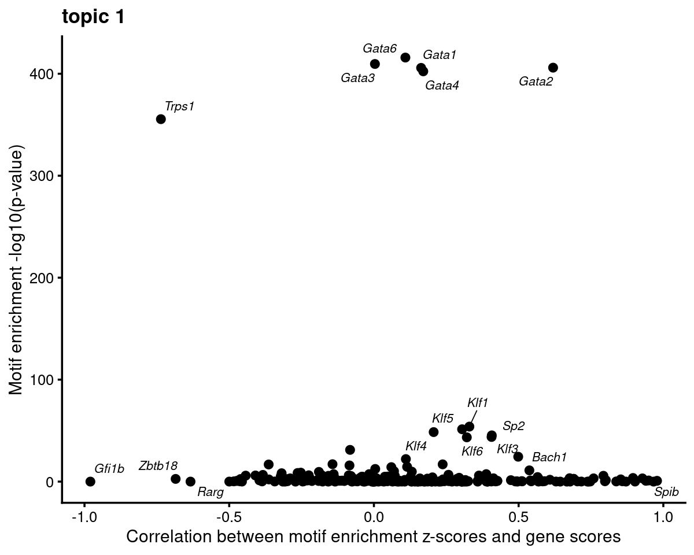

Motif analysis using topic modeling and DA results (v2) for Cusanovich et al (2018) scATAC-seq data
Kaixuan Luo
Last updated: 2022-02-24
Checks: 7 0
Knit directory: scATACseq-topics/
This reproducible R Markdown analysis was created with workflowr (version 1.7.0). The Checks tab describes the reproducibility checks that were applied when the results were created. The Past versions tab lists the development history.
Great! Since the R Markdown file has been committed to the Git repository, you know the exact version of the code that produced these results.
Great job! The global environment was empty. Objects defined in the global environment can affect the analysis in your R Markdown file in unknown ways. For reproduciblity it's best to always run the code in an empty environment.
The command set.seed(20200729) was run prior to running the code in the R Markdown file. Setting a seed ensures that any results that rely on randomness, e.g. subsampling or permutations, are reproducible.
Great job! Recording the operating system, R version, and package versions is critical for reproducibility.
Nice! There were no cached chunks for this analysis, so you can be confident that you successfully produced the results during this run.
Great job! Using relative paths to the files within your workflowr project makes it easier to run your code on other machines.
Great! You are using Git for version control. Tracking code development and connecting the code version to the results is critical for reproducibility.
The results in this page were generated with repository version 2810d52. See the Past versions tab to see a history of the changes made to the R Markdown and HTML files.
Note that you need to be careful to ensure that all relevant files for the analysis have been committed to Git prior to generating the results (you can use wflow_publish or wflow_git_commit). workflowr only checks the R Markdown file, but you know if there are other scripts or data files that it depends on. Below is the status of the Git repository when the results were generated:
Ignored files:
Ignored: .DS_Store
Ignored: .Rhistory
Ignored: .Rproj.user/
Ignored: output/clustering-Cusanovich2018.rds
Untracked files:
Untracked: analysis/analysis_Buenrostro2018_k10.Rmd
Untracked: analysis/clusters_Buenrostro2018_k10_Chen2019pipeline.Rmd
Untracked: analysis/process_data_Buenrostro2018_Chen2019.Rmd
Untracked: analysis/selected_figures_Buenrostro2018.Rmd
Untracked: analysis/test_structure_plots_Buenrostro2018_k11_Chen2019pipeline.Rmd
Untracked: gsea_b_cells.html
Untracked: paper/
Untracked: scripts/fit_all_models_Buenrostro_2018_chromVar_scPeaks_filtered.sbatch
Untracked: scripts/fit_models_Cusanovich2018_tissues.sh
Untracked: scripts/postfit_Buenrostro2018_Chen2019pipeline_v2.sh
Untracked: scripts/postfit_Cusanovich2018_v2.sh
Untracked: scripts/postfit_DA_analysis.sbatch
Untracked: topic1.html
Unstaged changes:
Modified: analysis/clusters_Cusanovich2018_k13.Rmd
Modified: analysis/gene_analysis_Buenrostro2018_Chen2019pipeline.Rmd
Modified: analysis/gene_analysis_Buenrostro2018_Chen2019pipeline_v2.Rmd
Modified: analysis/gene_analysis_Cusanovich2018.Rmd
Modified: analysis/gene_analysis_Cusanovich2018_v2.Rmd
Modified: analysis/motif_analysis_Buenrostro2018_Chen2019pipeline.Rmd
Modified: analysis/motif_analysis_Cusanovich2018.Rmd
Modified: analysis/plots_Cusanovich2018.Rmd
Deleted: output/plotly/Cusanovich2018/gsea_topic_10_genebody-sum_files/crosstalk-1.1.0.1/css/crosstalk.css
Deleted: output/plotly/Cusanovich2018/gsea_topic_10_genebody-sum_files/crosstalk-1.1.0.1/js/crosstalk.js
Deleted: output/plotly/Cusanovich2018/gsea_topic_10_genebody-sum_files/crosstalk-1.1.0.1/js/crosstalk.js.map
Deleted: output/plotly/Cusanovich2018/gsea_topic_10_genebody-sum_files/crosstalk-1.1.0.1/js/crosstalk.min.js
Deleted: output/plotly/Cusanovich2018/gsea_topic_10_genebody-sum_files/crosstalk-1.1.0.1/js/crosstalk.min.js.map
Deleted: output/plotly/Cusanovich2018/gsea_topic_10_genebody-sum_files/htmlwidgets-1.5.3/htmlwidgets.js
Deleted: output/plotly/Cusanovich2018/gsea_topic_10_genebody-sum_files/jquery-1.11.3/jquery-AUTHORS.txt
Deleted: output/plotly/Cusanovich2018/gsea_topic_10_genebody-sum_files/jquery-1.11.3/jquery.js
Deleted: output/plotly/Cusanovich2018/gsea_topic_10_genebody-sum_files/jquery-1.11.3/jquery.min.js
Deleted: output/plotly/Cusanovich2018/gsea_topic_10_genebody-sum_files/jquery-1.11.3/jquery.min.map
Deleted: output/plotly/Cusanovich2018/gsea_topic_10_genebody-sum_files/plotly-binding-4.9.2.1/plotly.js
Deleted: output/plotly/Cusanovich2018/gsea_topic_10_genebody-sum_files/plotly-htmlwidgets-css-1.52.2/plotly-htmlwidgets.css
Deleted: output/plotly/Cusanovich2018/gsea_topic_10_genebody-sum_files/plotly-main-1.52.2/plotly-latest.min.js
Deleted: output/plotly/Cusanovich2018/gsea_topic_10_genebody-sum_files/typedarray-0.1/typedarray.min.js
Deleted: output/plotly/Cusanovich2018/gsea_topic_10_tss-sum_files/crosstalk-1.1.0.1/css/crosstalk.css
Deleted: output/plotly/Cusanovich2018/gsea_topic_10_tss-sum_files/crosstalk-1.1.0.1/js/crosstalk.js
Deleted: output/plotly/Cusanovich2018/gsea_topic_10_tss-sum_files/crosstalk-1.1.0.1/js/crosstalk.js.map
Deleted: output/plotly/Cusanovich2018/gsea_topic_10_tss-sum_files/crosstalk-1.1.0.1/js/crosstalk.min.js
Deleted: output/plotly/Cusanovich2018/gsea_topic_10_tss-sum_files/crosstalk-1.1.0.1/js/crosstalk.min.js.map
Deleted: output/plotly/Cusanovich2018/gsea_topic_10_tss-sum_files/htmlwidgets-1.5.3/htmlwidgets.js
Deleted: output/plotly/Cusanovich2018/gsea_topic_10_tss-sum_files/jquery-1.11.3/jquery-AUTHORS.txt
Deleted: output/plotly/Cusanovich2018/gsea_topic_10_tss-sum_files/jquery-1.11.3/jquery.js
Deleted: output/plotly/Cusanovich2018/gsea_topic_10_tss-sum_files/jquery-1.11.3/jquery.min.js
Deleted: output/plotly/Cusanovich2018/gsea_topic_10_tss-sum_files/jquery-1.11.3/jquery.min.map
Deleted: output/plotly/Cusanovich2018/gsea_topic_10_tss-sum_files/plotly-binding-4.9.2.1/plotly.js
Deleted: output/plotly/Cusanovich2018/gsea_topic_10_tss-sum_files/plotly-htmlwidgets-css-1.52.2/plotly-htmlwidgets.css
Deleted: output/plotly/Cusanovich2018/gsea_topic_10_tss-sum_files/plotly-main-1.52.2/plotly-latest.min.js
Deleted: output/plotly/Cusanovich2018/gsea_topic_10_tss-sum_files/typedarray-0.1/typedarray.min.js
Deleted: output/plotly/Cusanovich2018/gsea_topic_11_genebody-sum_files/crosstalk-1.1.0.1/css/crosstalk.css
Deleted: output/plotly/Cusanovich2018/gsea_topic_11_genebody-sum_files/crosstalk-1.1.0.1/js/crosstalk.js
Deleted: output/plotly/Cusanovich2018/gsea_topic_11_genebody-sum_files/crosstalk-1.1.0.1/js/crosstalk.js.map
Deleted: output/plotly/Cusanovich2018/gsea_topic_11_genebody-sum_files/crosstalk-1.1.0.1/js/crosstalk.min.js
Deleted: output/plotly/Cusanovich2018/gsea_topic_11_genebody-sum_files/crosstalk-1.1.0.1/js/crosstalk.min.js.map
Deleted: output/plotly/Cusanovich2018/gsea_topic_11_genebody-sum_files/htmlwidgets-1.5.3/htmlwidgets.js
Deleted: output/plotly/Cusanovich2018/gsea_topic_11_genebody-sum_files/jquery-1.11.3/jquery-AUTHORS.txt
Deleted: output/plotly/Cusanovich2018/gsea_topic_11_genebody-sum_files/jquery-1.11.3/jquery.js
Deleted: output/plotly/Cusanovich2018/gsea_topic_11_genebody-sum_files/jquery-1.11.3/jquery.min.js
Deleted: output/plotly/Cusanovich2018/gsea_topic_11_genebody-sum_files/jquery-1.11.3/jquery.min.map
Deleted: output/plotly/Cusanovich2018/gsea_topic_11_genebody-sum_files/plotly-binding-4.9.2.1/plotly.js
Deleted: output/plotly/Cusanovich2018/gsea_topic_11_genebody-sum_files/plotly-htmlwidgets-css-1.52.2/plotly-htmlwidgets.css
Deleted: output/plotly/Cusanovich2018/gsea_topic_11_genebody-sum_files/plotly-main-1.52.2/plotly-latest.min.js
Deleted: output/plotly/Cusanovich2018/gsea_topic_11_genebody-sum_files/typedarray-0.1/typedarray.min.js
Deleted: output/plotly/Cusanovich2018/gsea_topic_11_tss-sum_files/crosstalk-1.1.0.1/css/crosstalk.css
Deleted: output/plotly/Cusanovich2018/gsea_topic_11_tss-sum_files/crosstalk-1.1.0.1/js/crosstalk.js
Deleted: output/plotly/Cusanovich2018/gsea_topic_11_tss-sum_files/crosstalk-1.1.0.1/js/crosstalk.js.map
Deleted: output/plotly/Cusanovich2018/gsea_topic_11_tss-sum_files/crosstalk-1.1.0.1/js/crosstalk.min.js
Deleted: output/plotly/Cusanovich2018/gsea_topic_11_tss-sum_files/crosstalk-1.1.0.1/js/crosstalk.min.js.map
Deleted: output/plotly/Cusanovich2018/gsea_topic_11_tss-sum_files/htmlwidgets-1.5.3/htmlwidgets.js
Deleted: output/plotly/Cusanovich2018/gsea_topic_11_tss-sum_files/jquery-1.11.3/jquery-AUTHORS.txt
Deleted: output/plotly/Cusanovich2018/gsea_topic_11_tss-sum_files/jquery-1.11.3/jquery.js
Deleted: output/plotly/Cusanovich2018/gsea_topic_11_tss-sum_files/jquery-1.11.3/jquery.min.js
Deleted: output/plotly/Cusanovich2018/gsea_topic_11_tss-sum_files/jquery-1.11.3/jquery.min.map
Deleted: output/plotly/Cusanovich2018/gsea_topic_11_tss-sum_files/plotly-binding-4.9.2.1/plotly.js
Deleted: output/plotly/Cusanovich2018/gsea_topic_11_tss-sum_files/plotly-htmlwidgets-css-1.52.2/plotly-htmlwidgets.css
Deleted: output/plotly/Cusanovich2018/gsea_topic_11_tss-sum_files/plotly-main-1.52.2/plotly-latest.min.js
Deleted: output/plotly/Cusanovich2018/gsea_topic_11_tss-sum_files/typedarray-0.1/typedarray.min.js
Deleted: output/plotly/Cusanovich2018/gsea_topic_12_genebody-sum_files/crosstalk-1.1.0.1/css/crosstalk.css
Deleted: output/plotly/Cusanovich2018/gsea_topic_12_genebody-sum_files/crosstalk-1.1.0.1/js/crosstalk.js
Deleted: output/plotly/Cusanovich2018/gsea_topic_12_genebody-sum_files/crosstalk-1.1.0.1/js/crosstalk.js.map
Deleted: output/plotly/Cusanovich2018/gsea_topic_12_genebody-sum_files/crosstalk-1.1.0.1/js/crosstalk.min.js
Deleted: output/plotly/Cusanovich2018/gsea_topic_12_genebody-sum_files/crosstalk-1.1.0.1/js/crosstalk.min.js.map
Deleted: output/plotly/Cusanovich2018/gsea_topic_12_genebody-sum_files/htmlwidgets-1.5.3/htmlwidgets.js
Deleted: output/plotly/Cusanovich2018/gsea_topic_12_genebody-sum_files/jquery-1.11.3/jquery-AUTHORS.txt
Deleted: output/plotly/Cusanovich2018/gsea_topic_12_genebody-sum_files/jquery-1.11.3/jquery.js
Deleted: output/plotly/Cusanovich2018/gsea_topic_12_genebody-sum_files/jquery-1.11.3/jquery.min.js
Deleted: output/plotly/Cusanovich2018/gsea_topic_12_genebody-sum_files/jquery-1.11.3/jquery.min.map
Deleted: output/plotly/Cusanovich2018/gsea_topic_12_genebody-sum_files/plotly-binding-4.9.2.1/plotly.js
Deleted: output/plotly/Cusanovich2018/gsea_topic_12_genebody-sum_files/plotly-htmlwidgets-css-1.52.2/plotly-htmlwidgets.css
Deleted: output/plotly/Cusanovich2018/gsea_topic_12_genebody-sum_files/plotly-main-1.52.2/plotly-latest.min.js
Deleted: output/plotly/Cusanovich2018/gsea_topic_12_genebody-sum_files/typedarray-0.1/typedarray.min.js
Deleted: output/plotly/Cusanovich2018/gsea_topic_12_tss-sum_files/crosstalk-1.1.0.1/css/crosstalk.css
Deleted: output/plotly/Cusanovich2018/gsea_topic_12_tss-sum_files/crosstalk-1.1.0.1/js/crosstalk.js
Deleted: output/plotly/Cusanovich2018/gsea_topic_12_tss-sum_files/crosstalk-1.1.0.1/js/crosstalk.js.map
Deleted: output/plotly/Cusanovich2018/gsea_topic_12_tss-sum_files/crosstalk-1.1.0.1/js/crosstalk.min.js
Deleted: output/plotly/Cusanovich2018/gsea_topic_12_tss-sum_files/crosstalk-1.1.0.1/js/crosstalk.min.js.map
Deleted: output/plotly/Cusanovich2018/gsea_topic_12_tss-sum_files/htmlwidgets-1.5.3/htmlwidgets.js
Deleted: output/plotly/Cusanovich2018/gsea_topic_12_tss-sum_files/jquery-1.11.3/jquery-AUTHORS.txt
Deleted: output/plotly/Cusanovich2018/gsea_topic_12_tss-sum_files/jquery-1.11.3/jquery.js
Deleted: output/plotly/Cusanovich2018/gsea_topic_12_tss-sum_files/jquery-1.11.3/jquery.min.js
Deleted: output/plotly/Cusanovich2018/gsea_topic_12_tss-sum_files/jquery-1.11.3/jquery.min.map
Deleted: output/plotly/Cusanovich2018/gsea_topic_12_tss-sum_files/plotly-binding-4.9.2.1/plotly.js
Deleted: output/plotly/Cusanovich2018/gsea_topic_12_tss-sum_files/plotly-htmlwidgets-css-1.52.2/plotly-htmlwidgets.css
Deleted: output/plotly/Cusanovich2018/gsea_topic_12_tss-sum_files/plotly-main-1.52.2/plotly-latest.min.js
Deleted: output/plotly/Cusanovich2018/gsea_topic_12_tss-sum_files/typedarray-0.1/typedarray.min.js
Deleted: output/plotly/Cusanovich2018/gsea_topic_13_genebody-sum_files/crosstalk-1.1.0.1/css/crosstalk.css
Deleted: output/plotly/Cusanovich2018/gsea_topic_13_genebody-sum_files/crosstalk-1.1.0.1/js/crosstalk.js
Deleted: output/plotly/Cusanovich2018/gsea_topic_13_genebody-sum_files/crosstalk-1.1.0.1/js/crosstalk.js.map
Deleted: output/plotly/Cusanovich2018/gsea_topic_13_genebody-sum_files/crosstalk-1.1.0.1/js/crosstalk.min.js
Deleted: output/plotly/Cusanovich2018/gsea_topic_13_genebody-sum_files/crosstalk-1.1.0.1/js/crosstalk.min.js.map
Deleted: output/plotly/Cusanovich2018/gsea_topic_13_genebody-sum_files/htmlwidgets-1.5.3/htmlwidgets.js
Deleted: output/plotly/Cusanovich2018/gsea_topic_13_genebody-sum_files/jquery-1.11.3/jquery-AUTHORS.txt
Deleted: output/plotly/Cusanovich2018/gsea_topic_13_genebody-sum_files/jquery-1.11.3/jquery.js
Deleted: output/plotly/Cusanovich2018/gsea_topic_13_genebody-sum_files/jquery-1.11.3/jquery.min.js
Deleted: output/plotly/Cusanovich2018/gsea_topic_13_genebody-sum_files/jquery-1.11.3/jquery.min.map
Deleted: output/plotly/Cusanovich2018/gsea_topic_13_genebody-sum_files/plotly-binding-4.9.2.1/plotly.js
Deleted: output/plotly/Cusanovich2018/gsea_topic_13_genebody-sum_files/plotly-htmlwidgets-css-1.52.2/plotly-htmlwidgets.css
Deleted: output/plotly/Cusanovich2018/gsea_topic_13_genebody-sum_files/plotly-main-1.52.2/plotly-latest.min.js
Deleted: output/plotly/Cusanovich2018/gsea_topic_13_genebody-sum_files/typedarray-0.1/typedarray.min.js
Deleted: output/plotly/Cusanovich2018/gsea_topic_13_tss-sum_files/crosstalk-1.1.0.1/css/crosstalk.css
Deleted: output/plotly/Cusanovich2018/gsea_topic_13_tss-sum_files/crosstalk-1.1.0.1/js/crosstalk.js
Deleted: output/plotly/Cusanovich2018/gsea_topic_13_tss-sum_files/crosstalk-1.1.0.1/js/crosstalk.js.map
Deleted: output/plotly/Cusanovich2018/gsea_topic_13_tss-sum_files/crosstalk-1.1.0.1/js/crosstalk.min.js
Deleted: output/plotly/Cusanovich2018/gsea_topic_13_tss-sum_files/crosstalk-1.1.0.1/js/crosstalk.min.js.map
Deleted: output/plotly/Cusanovich2018/gsea_topic_13_tss-sum_files/htmlwidgets-1.5.3/htmlwidgets.js
Deleted: output/plotly/Cusanovich2018/gsea_topic_13_tss-sum_files/jquery-1.11.3/jquery-AUTHORS.txt
Deleted: output/plotly/Cusanovich2018/gsea_topic_13_tss-sum_files/jquery-1.11.3/jquery.js
Deleted: output/plotly/Cusanovich2018/gsea_topic_13_tss-sum_files/jquery-1.11.3/jquery.min.js
Deleted: output/plotly/Cusanovich2018/gsea_topic_13_tss-sum_files/jquery-1.11.3/jquery.min.map
Deleted: output/plotly/Cusanovich2018/gsea_topic_13_tss-sum_files/plotly-binding-4.9.2.1/plotly.js
Deleted: output/plotly/Cusanovich2018/gsea_topic_13_tss-sum_files/plotly-htmlwidgets-css-1.52.2/plotly-htmlwidgets.css
Deleted: output/plotly/Cusanovich2018/gsea_topic_13_tss-sum_files/plotly-main-1.52.2/plotly-latest.min.js
Deleted: output/plotly/Cusanovich2018/gsea_topic_13_tss-sum_files/typedarray-0.1/typedarray.min.js
Deleted: output/plotly/Cusanovich2018/gsea_topic_1_genebody-sum_files/crosstalk-1.1.0.1/css/crosstalk.css
Deleted: output/plotly/Cusanovich2018/gsea_topic_1_genebody-sum_files/crosstalk-1.1.0.1/js/crosstalk.js
Deleted: output/plotly/Cusanovich2018/gsea_topic_1_genebody-sum_files/crosstalk-1.1.0.1/js/crosstalk.js.map
Deleted: output/plotly/Cusanovich2018/gsea_topic_1_genebody-sum_files/crosstalk-1.1.0.1/js/crosstalk.min.js
Deleted: output/plotly/Cusanovich2018/gsea_topic_1_genebody-sum_files/crosstalk-1.1.0.1/js/crosstalk.min.js.map
Deleted: output/plotly/Cusanovich2018/gsea_topic_1_genebody-sum_files/htmlwidgets-1.5.3/htmlwidgets.js
Deleted: output/plotly/Cusanovich2018/gsea_topic_1_genebody-sum_files/jquery-1.11.3/jquery-AUTHORS.txt
Deleted: output/plotly/Cusanovich2018/gsea_topic_1_genebody-sum_files/jquery-1.11.3/jquery.js
Deleted: output/plotly/Cusanovich2018/gsea_topic_1_genebody-sum_files/jquery-1.11.3/jquery.min.js
Deleted: output/plotly/Cusanovich2018/gsea_topic_1_genebody-sum_files/jquery-1.11.3/jquery.min.map
Deleted: output/plotly/Cusanovich2018/gsea_topic_1_genebody-sum_files/plotly-binding-4.9.2.1/plotly.js
Deleted: output/plotly/Cusanovich2018/gsea_topic_1_genebody-sum_files/plotly-htmlwidgets-css-1.52.2/plotly-htmlwidgets.css
Deleted: output/plotly/Cusanovich2018/gsea_topic_1_genebody-sum_files/plotly-main-1.52.2/plotly-latest.min.js
Deleted: output/plotly/Cusanovich2018/gsea_topic_1_genebody-sum_files/typedarray-0.1/typedarray.min.js
Deleted: output/plotly/Cusanovich2018/gsea_topic_1_tss-sum_files/crosstalk-1.1.0.1/css/crosstalk.css
Deleted: output/plotly/Cusanovich2018/gsea_topic_1_tss-sum_files/crosstalk-1.1.0.1/js/crosstalk.js
Deleted: output/plotly/Cusanovich2018/gsea_topic_1_tss-sum_files/crosstalk-1.1.0.1/js/crosstalk.js.map
Deleted: output/plotly/Cusanovich2018/gsea_topic_1_tss-sum_files/crosstalk-1.1.0.1/js/crosstalk.min.js
Deleted: output/plotly/Cusanovich2018/gsea_topic_1_tss-sum_files/crosstalk-1.1.0.1/js/crosstalk.min.js.map
Deleted: output/plotly/Cusanovich2018/gsea_topic_1_tss-sum_files/htmlwidgets-1.5.3/htmlwidgets.js
Deleted: output/plotly/Cusanovich2018/gsea_topic_1_tss-sum_files/jquery-1.11.3/jquery-AUTHORS.txt
Deleted: output/plotly/Cusanovich2018/gsea_topic_1_tss-sum_files/jquery-1.11.3/jquery.js
Deleted: output/plotly/Cusanovich2018/gsea_topic_1_tss-sum_files/jquery-1.11.3/jquery.min.js
Deleted: output/plotly/Cusanovich2018/gsea_topic_1_tss-sum_files/jquery-1.11.3/jquery.min.map
Deleted: output/plotly/Cusanovich2018/gsea_topic_1_tss-sum_files/plotly-binding-4.9.2.1/plotly.js
Deleted: output/plotly/Cusanovich2018/gsea_topic_1_tss-sum_files/plotly-htmlwidgets-css-1.52.2/plotly-htmlwidgets.css
Deleted: output/plotly/Cusanovich2018/gsea_topic_1_tss-sum_files/plotly-main-1.52.2/plotly-latest.min.js
Deleted: output/plotly/Cusanovich2018/gsea_topic_1_tss-sum_files/typedarray-0.1/typedarray.min.js
Deleted: output/plotly/Cusanovich2018/gsea_topic_2_genebody-sum_files/crosstalk-1.1.0.1/css/crosstalk.css
Deleted: output/plotly/Cusanovich2018/gsea_topic_2_genebody-sum_files/crosstalk-1.1.0.1/js/crosstalk.js
Deleted: output/plotly/Cusanovich2018/gsea_topic_2_genebody-sum_files/crosstalk-1.1.0.1/js/crosstalk.js.map
Deleted: output/plotly/Cusanovich2018/gsea_topic_2_genebody-sum_files/crosstalk-1.1.0.1/js/crosstalk.min.js
Deleted: output/plotly/Cusanovich2018/gsea_topic_2_genebody-sum_files/crosstalk-1.1.0.1/js/crosstalk.min.js.map
Deleted: output/plotly/Cusanovich2018/gsea_topic_2_genebody-sum_files/htmlwidgets-1.5.3/htmlwidgets.js
Deleted: output/plotly/Cusanovich2018/gsea_topic_2_genebody-sum_files/jquery-1.11.3/jquery-AUTHORS.txt
Deleted: output/plotly/Cusanovich2018/gsea_topic_2_genebody-sum_files/jquery-1.11.3/jquery.js
Deleted: output/plotly/Cusanovich2018/gsea_topic_2_genebody-sum_files/jquery-1.11.3/jquery.min.js
Deleted: output/plotly/Cusanovich2018/gsea_topic_2_genebody-sum_files/jquery-1.11.3/jquery.min.map
Deleted: output/plotly/Cusanovich2018/gsea_topic_2_genebody-sum_files/plotly-binding-4.9.2.1/plotly.js
Deleted: output/plotly/Cusanovich2018/gsea_topic_2_genebody-sum_files/plotly-htmlwidgets-css-1.52.2/plotly-htmlwidgets.css
Deleted: output/plotly/Cusanovich2018/gsea_topic_2_genebody-sum_files/plotly-main-1.52.2/plotly-latest.min.js
Deleted: output/plotly/Cusanovich2018/gsea_topic_2_genebody-sum_files/typedarray-0.1/typedarray.min.js
Deleted: output/plotly/Cusanovich2018/gsea_topic_2_tss-sum_files/crosstalk-1.1.0.1/css/crosstalk.css
Deleted: output/plotly/Cusanovich2018/gsea_topic_2_tss-sum_files/crosstalk-1.1.0.1/js/crosstalk.js
Deleted: output/plotly/Cusanovich2018/gsea_topic_2_tss-sum_files/crosstalk-1.1.0.1/js/crosstalk.js.map
Deleted: output/plotly/Cusanovich2018/gsea_topic_2_tss-sum_files/crosstalk-1.1.0.1/js/crosstalk.min.js
Deleted: output/plotly/Cusanovich2018/gsea_topic_2_tss-sum_files/crosstalk-1.1.0.1/js/crosstalk.min.js.map
Deleted: output/plotly/Cusanovich2018/gsea_topic_2_tss-sum_files/htmlwidgets-1.5.3/htmlwidgets.js
Deleted: output/plotly/Cusanovich2018/gsea_topic_2_tss-sum_files/jquery-1.11.3/jquery-AUTHORS.txt
Deleted: output/plotly/Cusanovich2018/gsea_topic_2_tss-sum_files/jquery-1.11.3/jquery.js
Deleted: output/plotly/Cusanovich2018/gsea_topic_2_tss-sum_files/jquery-1.11.3/jquery.min.js
Deleted: output/plotly/Cusanovich2018/gsea_topic_2_tss-sum_files/jquery-1.11.3/jquery.min.map
Deleted: output/plotly/Cusanovich2018/gsea_topic_2_tss-sum_files/plotly-binding-4.9.2.1/plotly.js
Deleted: output/plotly/Cusanovich2018/gsea_topic_2_tss-sum_files/plotly-htmlwidgets-css-1.52.2/plotly-htmlwidgets.css
Deleted: output/plotly/Cusanovich2018/gsea_topic_2_tss-sum_files/plotly-main-1.52.2/plotly-latest.min.js
Deleted: output/plotly/Cusanovich2018/gsea_topic_2_tss-sum_files/typedarray-0.1/typedarray.min.js
Deleted: output/plotly/Cusanovich2018/gsea_topic_3_genebody-sum_files/crosstalk-1.1.0.1/css/crosstalk.css
Deleted: output/plotly/Cusanovich2018/gsea_topic_3_genebody-sum_files/crosstalk-1.1.0.1/js/crosstalk.js
Deleted: output/plotly/Cusanovich2018/gsea_topic_3_genebody-sum_files/crosstalk-1.1.0.1/js/crosstalk.js.map
Deleted: output/plotly/Cusanovich2018/gsea_topic_3_genebody-sum_files/crosstalk-1.1.0.1/js/crosstalk.min.js
Deleted: output/plotly/Cusanovich2018/gsea_topic_3_genebody-sum_files/crosstalk-1.1.0.1/js/crosstalk.min.js.map
Deleted: output/plotly/Cusanovich2018/gsea_topic_3_genebody-sum_files/htmlwidgets-1.5.3/htmlwidgets.js
Deleted: output/plotly/Cusanovich2018/gsea_topic_3_genebody-sum_files/jquery-1.11.3/jquery-AUTHORS.txt
Deleted: output/plotly/Cusanovich2018/gsea_topic_3_genebody-sum_files/jquery-1.11.3/jquery.js
Deleted: output/plotly/Cusanovich2018/gsea_topic_3_genebody-sum_files/jquery-1.11.3/jquery.min.js
Deleted: output/plotly/Cusanovich2018/gsea_topic_3_genebody-sum_files/jquery-1.11.3/jquery.min.map
Deleted: output/plotly/Cusanovich2018/gsea_topic_3_genebody-sum_files/plotly-binding-4.9.2.1/plotly.js
Deleted: output/plotly/Cusanovich2018/gsea_topic_3_genebody-sum_files/plotly-htmlwidgets-css-1.52.2/plotly-htmlwidgets.css
Deleted: output/plotly/Cusanovich2018/gsea_topic_3_genebody-sum_files/plotly-main-1.52.2/plotly-latest.min.js
Deleted: output/plotly/Cusanovich2018/gsea_topic_3_genebody-sum_files/typedarray-0.1/typedarray.min.js
Deleted: output/plotly/Cusanovich2018/gsea_topic_3_tss-sum_files/crosstalk-1.1.0.1/css/crosstalk.css
Deleted: output/plotly/Cusanovich2018/gsea_topic_3_tss-sum_files/crosstalk-1.1.0.1/js/crosstalk.js
Deleted: output/plotly/Cusanovich2018/gsea_topic_3_tss-sum_files/crosstalk-1.1.0.1/js/crosstalk.js.map
Deleted: output/plotly/Cusanovich2018/gsea_topic_3_tss-sum_files/crosstalk-1.1.0.1/js/crosstalk.min.js
Deleted: output/plotly/Cusanovich2018/gsea_topic_3_tss-sum_files/crosstalk-1.1.0.1/js/crosstalk.min.js.map
Deleted: output/plotly/Cusanovich2018/gsea_topic_3_tss-sum_files/htmlwidgets-1.5.3/htmlwidgets.js
Deleted: output/plotly/Cusanovich2018/gsea_topic_3_tss-sum_files/jquery-1.11.3/jquery-AUTHORS.txt
Deleted: output/plotly/Cusanovich2018/gsea_topic_3_tss-sum_files/jquery-1.11.3/jquery.js
Deleted: output/plotly/Cusanovich2018/gsea_topic_3_tss-sum_files/jquery-1.11.3/jquery.min.js
Deleted: output/plotly/Cusanovich2018/gsea_topic_3_tss-sum_files/jquery-1.11.3/jquery.min.map
Deleted: output/plotly/Cusanovich2018/gsea_topic_3_tss-sum_files/plotly-binding-4.9.2.1/plotly.js
Deleted: output/plotly/Cusanovich2018/gsea_topic_3_tss-sum_files/plotly-htmlwidgets-css-1.52.2/plotly-htmlwidgets.css
Deleted: output/plotly/Cusanovich2018/gsea_topic_3_tss-sum_files/plotly-main-1.52.2/plotly-latest.min.js
Deleted: output/plotly/Cusanovich2018/gsea_topic_3_tss-sum_files/typedarray-0.1/typedarray.min.js
Deleted: output/plotly/Cusanovich2018/gsea_topic_4_genebody-sum_files/crosstalk-1.1.0.1/css/crosstalk.css
Deleted: output/plotly/Cusanovich2018/gsea_topic_4_genebody-sum_files/crosstalk-1.1.0.1/js/crosstalk.js
Deleted: output/plotly/Cusanovich2018/gsea_topic_4_genebody-sum_files/crosstalk-1.1.0.1/js/crosstalk.js.map
Deleted: output/plotly/Cusanovich2018/gsea_topic_4_genebody-sum_files/crosstalk-1.1.0.1/js/crosstalk.min.js
Deleted: output/plotly/Cusanovich2018/gsea_topic_4_genebody-sum_files/crosstalk-1.1.0.1/js/crosstalk.min.js.map
Deleted: output/plotly/Cusanovich2018/gsea_topic_4_genebody-sum_files/htmlwidgets-1.5.3/htmlwidgets.js
Deleted: output/plotly/Cusanovich2018/gsea_topic_4_genebody-sum_files/jquery-1.11.3/jquery-AUTHORS.txt
Deleted: output/plotly/Cusanovich2018/gsea_topic_4_genebody-sum_files/jquery-1.11.3/jquery.js
Deleted: output/plotly/Cusanovich2018/gsea_topic_4_genebody-sum_files/jquery-1.11.3/jquery.min.js
Deleted: output/plotly/Cusanovich2018/gsea_topic_4_genebody-sum_files/jquery-1.11.3/jquery.min.map
Deleted: output/plotly/Cusanovich2018/gsea_topic_4_genebody-sum_files/plotly-binding-4.9.2.1/plotly.js
Deleted: output/plotly/Cusanovich2018/gsea_topic_4_genebody-sum_files/plotly-htmlwidgets-css-1.52.2/plotly-htmlwidgets.css
Deleted: output/plotly/Cusanovich2018/gsea_topic_4_genebody-sum_files/plotly-main-1.52.2/plotly-latest.min.js
Deleted: output/plotly/Cusanovich2018/gsea_topic_4_genebody-sum_files/typedarray-0.1/typedarray.min.js
Deleted: output/plotly/Cusanovich2018/gsea_topic_4_tss-sum_files/crosstalk-1.1.0.1/css/crosstalk.css
Deleted: output/plotly/Cusanovich2018/gsea_topic_4_tss-sum_files/crosstalk-1.1.0.1/js/crosstalk.js
Deleted: output/plotly/Cusanovich2018/gsea_topic_4_tss-sum_files/crosstalk-1.1.0.1/js/crosstalk.js.map
Deleted: output/plotly/Cusanovich2018/gsea_topic_4_tss-sum_files/crosstalk-1.1.0.1/js/crosstalk.min.js
Deleted: output/plotly/Cusanovich2018/gsea_topic_4_tss-sum_files/crosstalk-1.1.0.1/js/crosstalk.min.js.map
Deleted: output/plotly/Cusanovich2018/gsea_topic_4_tss-sum_files/htmlwidgets-1.5.3/htmlwidgets.js
Deleted: output/plotly/Cusanovich2018/gsea_topic_4_tss-sum_files/jquery-1.11.3/jquery-AUTHORS.txt
Deleted: output/plotly/Cusanovich2018/gsea_topic_4_tss-sum_files/jquery-1.11.3/jquery.js
Deleted: output/plotly/Cusanovich2018/gsea_topic_4_tss-sum_files/jquery-1.11.3/jquery.min.js
Deleted: output/plotly/Cusanovich2018/gsea_topic_4_tss-sum_files/jquery-1.11.3/jquery.min.map
Deleted: output/plotly/Cusanovich2018/gsea_topic_4_tss-sum_files/plotly-binding-4.9.2.1/plotly.js
Deleted: output/plotly/Cusanovich2018/gsea_topic_4_tss-sum_files/plotly-htmlwidgets-css-1.52.2/plotly-htmlwidgets.css
Deleted: output/plotly/Cusanovich2018/gsea_topic_4_tss-sum_files/plotly-main-1.52.2/plotly-latest.min.js
Deleted: output/plotly/Cusanovich2018/gsea_topic_4_tss-sum_files/typedarray-0.1/typedarray.min.js
Deleted: output/plotly/Cusanovich2018/gsea_topic_5_genebody-sum_files/crosstalk-1.1.0.1/css/crosstalk.css
Deleted: output/plotly/Cusanovich2018/gsea_topic_5_genebody-sum_files/crosstalk-1.1.0.1/js/crosstalk.js
Deleted: output/plotly/Cusanovich2018/gsea_topic_5_genebody-sum_files/crosstalk-1.1.0.1/js/crosstalk.js.map
Deleted: output/plotly/Cusanovich2018/gsea_topic_5_genebody-sum_files/crosstalk-1.1.0.1/js/crosstalk.min.js
Deleted: output/plotly/Cusanovich2018/gsea_topic_5_genebody-sum_files/crosstalk-1.1.0.1/js/crosstalk.min.js.map
Deleted: output/plotly/Cusanovich2018/gsea_topic_5_genebody-sum_files/htmlwidgets-1.5.3/htmlwidgets.js
Deleted: output/plotly/Cusanovich2018/gsea_topic_5_genebody-sum_files/jquery-1.11.3/jquery-AUTHORS.txt
Deleted: output/plotly/Cusanovich2018/gsea_topic_5_genebody-sum_files/jquery-1.11.3/jquery.js
Deleted: output/plotly/Cusanovich2018/gsea_topic_5_genebody-sum_files/jquery-1.11.3/jquery.min.js
Deleted: output/plotly/Cusanovich2018/gsea_topic_5_genebody-sum_files/jquery-1.11.3/jquery.min.map
Deleted: output/plotly/Cusanovich2018/gsea_topic_5_genebody-sum_files/plotly-binding-4.9.2.1/plotly.js
Deleted: output/plotly/Cusanovich2018/gsea_topic_5_genebody-sum_files/plotly-htmlwidgets-css-1.52.2/plotly-htmlwidgets.css
Deleted: output/plotly/Cusanovich2018/gsea_topic_5_genebody-sum_files/plotly-main-1.52.2/plotly-latest.min.js
Deleted: output/plotly/Cusanovich2018/gsea_topic_5_genebody-sum_files/typedarray-0.1/typedarray.min.js
Deleted: output/plotly/Cusanovich2018/gsea_topic_5_tss-sum_files/crosstalk-1.1.0.1/css/crosstalk.css
Deleted: output/plotly/Cusanovich2018/gsea_topic_5_tss-sum_files/crosstalk-1.1.0.1/js/crosstalk.js
Deleted: output/plotly/Cusanovich2018/gsea_topic_5_tss-sum_files/crosstalk-1.1.0.1/js/crosstalk.js.map
Deleted: output/plotly/Cusanovich2018/gsea_topic_5_tss-sum_files/crosstalk-1.1.0.1/js/crosstalk.min.js
Deleted: output/plotly/Cusanovich2018/gsea_topic_5_tss-sum_files/crosstalk-1.1.0.1/js/crosstalk.min.js.map
Deleted: output/plotly/Cusanovich2018/gsea_topic_5_tss-sum_files/htmlwidgets-1.5.3/htmlwidgets.js
Deleted: output/plotly/Cusanovich2018/gsea_topic_5_tss-sum_files/jquery-1.11.3/jquery-AUTHORS.txt
Deleted: output/plotly/Cusanovich2018/gsea_topic_5_tss-sum_files/jquery-1.11.3/jquery.js
Deleted: output/plotly/Cusanovich2018/gsea_topic_5_tss-sum_files/jquery-1.11.3/jquery.min.js
Deleted: output/plotly/Cusanovich2018/gsea_topic_5_tss-sum_files/jquery-1.11.3/jquery.min.map
Deleted: output/plotly/Cusanovich2018/gsea_topic_5_tss-sum_files/plotly-binding-4.9.2.1/plotly.js
Deleted: output/plotly/Cusanovich2018/gsea_topic_5_tss-sum_files/plotly-htmlwidgets-css-1.52.2/plotly-htmlwidgets.css
Deleted: output/plotly/Cusanovich2018/gsea_topic_5_tss-sum_files/plotly-main-1.52.2/plotly-latest.min.js
Deleted: output/plotly/Cusanovich2018/gsea_topic_5_tss-sum_files/typedarray-0.1/typedarray.min.js
Deleted: output/plotly/Cusanovich2018/gsea_topic_6_genebody-sum_files/crosstalk-1.1.0.1/css/crosstalk.css
Deleted: output/plotly/Cusanovich2018/gsea_topic_6_genebody-sum_files/crosstalk-1.1.0.1/js/crosstalk.js
Deleted: output/plotly/Cusanovich2018/gsea_topic_6_genebody-sum_files/crosstalk-1.1.0.1/js/crosstalk.js.map
Deleted: output/plotly/Cusanovich2018/gsea_topic_6_genebody-sum_files/crosstalk-1.1.0.1/js/crosstalk.min.js
Deleted: output/plotly/Cusanovich2018/gsea_topic_6_genebody-sum_files/crosstalk-1.1.0.1/js/crosstalk.min.js.map
Deleted: output/plotly/Cusanovich2018/gsea_topic_6_genebody-sum_files/htmlwidgets-1.5.3/htmlwidgets.js
Deleted: output/plotly/Cusanovich2018/gsea_topic_6_genebody-sum_files/jquery-1.11.3/jquery-AUTHORS.txt
Deleted: output/plotly/Cusanovich2018/gsea_topic_6_genebody-sum_files/jquery-1.11.3/jquery.js
Deleted: output/plotly/Cusanovich2018/gsea_topic_6_genebody-sum_files/jquery-1.11.3/jquery.min.js
Deleted: output/plotly/Cusanovich2018/gsea_topic_6_genebody-sum_files/jquery-1.11.3/jquery.min.map
Deleted: output/plotly/Cusanovich2018/gsea_topic_6_genebody-sum_files/plotly-binding-4.9.2.1/plotly.js
Deleted: output/plotly/Cusanovich2018/gsea_topic_6_genebody-sum_files/plotly-htmlwidgets-css-1.52.2/plotly-htmlwidgets.css
Deleted: output/plotly/Cusanovich2018/gsea_topic_6_genebody-sum_files/plotly-main-1.52.2/plotly-latest.min.js
Deleted: output/plotly/Cusanovich2018/gsea_topic_6_genebody-sum_files/typedarray-0.1/typedarray.min.js
Deleted: output/plotly/Cusanovich2018/gsea_topic_6_tss-sum_files/crosstalk-1.1.0.1/css/crosstalk.css
Deleted: output/plotly/Cusanovich2018/gsea_topic_6_tss-sum_files/crosstalk-1.1.0.1/js/crosstalk.js
Deleted: output/plotly/Cusanovich2018/gsea_topic_6_tss-sum_files/crosstalk-1.1.0.1/js/crosstalk.js.map
Deleted: output/plotly/Cusanovich2018/gsea_topic_6_tss-sum_files/crosstalk-1.1.0.1/js/crosstalk.min.js
Deleted: output/plotly/Cusanovich2018/gsea_topic_6_tss-sum_files/crosstalk-1.1.0.1/js/crosstalk.min.js.map
Deleted: output/plotly/Cusanovich2018/gsea_topic_6_tss-sum_files/htmlwidgets-1.5.3/htmlwidgets.js
Deleted: output/plotly/Cusanovich2018/gsea_topic_6_tss-sum_files/jquery-1.11.3/jquery-AUTHORS.txt
Deleted: output/plotly/Cusanovich2018/gsea_topic_6_tss-sum_files/jquery-1.11.3/jquery.js
Deleted: output/plotly/Cusanovich2018/gsea_topic_6_tss-sum_files/jquery-1.11.3/jquery.min.js
Deleted: output/plotly/Cusanovich2018/gsea_topic_6_tss-sum_files/jquery-1.11.3/jquery.min.map
Deleted: output/plotly/Cusanovich2018/gsea_topic_6_tss-sum_files/plotly-binding-4.9.2.1/plotly.js
Deleted: output/plotly/Cusanovich2018/gsea_topic_6_tss-sum_files/plotly-htmlwidgets-css-1.52.2/plotly-htmlwidgets.css
Deleted: output/plotly/Cusanovich2018/gsea_topic_6_tss-sum_files/plotly-main-1.52.2/plotly-latest.min.js
Deleted: output/plotly/Cusanovich2018/gsea_topic_6_tss-sum_files/typedarray-0.1/typedarray.min.js
Deleted: output/plotly/Cusanovich2018/gsea_topic_7_genebody-sum_files/crosstalk-1.1.0.1/css/crosstalk.css
Deleted: output/plotly/Cusanovich2018/gsea_topic_7_genebody-sum_files/crosstalk-1.1.0.1/js/crosstalk.js
Deleted: output/plotly/Cusanovich2018/gsea_topic_7_genebody-sum_files/crosstalk-1.1.0.1/js/crosstalk.js.map
Deleted: output/plotly/Cusanovich2018/gsea_topic_7_genebody-sum_files/crosstalk-1.1.0.1/js/crosstalk.min.js
Deleted: output/plotly/Cusanovich2018/gsea_topic_7_genebody-sum_files/crosstalk-1.1.0.1/js/crosstalk.min.js.map
Deleted: output/plotly/Cusanovich2018/gsea_topic_7_genebody-sum_files/htmlwidgets-1.5.3/htmlwidgets.js
Deleted: output/plotly/Cusanovich2018/gsea_topic_7_genebody-sum_files/jquery-1.11.3/jquery-AUTHORS.txt
Deleted: output/plotly/Cusanovich2018/gsea_topic_7_genebody-sum_files/jquery-1.11.3/jquery.js
Deleted: output/plotly/Cusanovich2018/gsea_topic_7_genebody-sum_files/jquery-1.11.3/jquery.min.js
Deleted: output/plotly/Cusanovich2018/gsea_topic_7_genebody-sum_files/jquery-1.11.3/jquery.min.map
Deleted: output/plotly/Cusanovich2018/gsea_topic_7_genebody-sum_files/plotly-binding-4.9.2.1/plotly.js
Deleted: output/plotly/Cusanovich2018/gsea_topic_7_genebody-sum_files/plotly-htmlwidgets-css-1.52.2/plotly-htmlwidgets.css
Deleted: output/plotly/Cusanovich2018/gsea_topic_7_genebody-sum_files/plotly-main-1.52.2/plotly-latest.min.js
Deleted: output/plotly/Cusanovich2018/gsea_topic_7_genebody-sum_files/typedarray-0.1/typedarray.min.js
Deleted: output/plotly/Cusanovich2018/gsea_topic_7_tss-sum_files/crosstalk-1.1.0.1/css/crosstalk.css
Deleted: output/plotly/Cusanovich2018/gsea_topic_7_tss-sum_files/crosstalk-1.1.0.1/js/crosstalk.js
Deleted: output/plotly/Cusanovich2018/gsea_topic_7_tss-sum_files/crosstalk-1.1.0.1/js/crosstalk.js.map
Deleted: output/plotly/Cusanovich2018/gsea_topic_7_tss-sum_files/crosstalk-1.1.0.1/js/crosstalk.min.js
Deleted: output/plotly/Cusanovich2018/gsea_topic_7_tss-sum_files/crosstalk-1.1.0.1/js/crosstalk.min.js.map
Deleted: output/plotly/Cusanovich2018/gsea_topic_7_tss-sum_files/htmlwidgets-1.5.3/htmlwidgets.js
Deleted: output/plotly/Cusanovich2018/gsea_topic_7_tss-sum_files/jquery-1.11.3/jquery-AUTHORS.txt
Deleted: output/plotly/Cusanovich2018/gsea_topic_7_tss-sum_files/jquery-1.11.3/jquery.js
Deleted: output/plotly/Cusanovich2018/gsea_topic_7_tss-sum_files/jquery-1.11.3/jquery.min.js
Deleted: output/plotly/Cusanovich2018/gsea_topic_7_tss-sum_files/jquery-1.11.3/jquery.min.map
Deleted: output/plotly/Cusanovich2018/gsea_topic_7_tss-sum_files/plotly-binding-4.9.2.1/plotly.js
Deleted: output/plotly/Cusanovich2018/gsea_topic_7_tss-sum_files/plotly-htmlwidgets-css-1.52.2/plotly-htmlwidgets.css
Deleted: output/plotly/Cusanovich2018/gsea_topic_7_tss-sum_files/plotly-main-1.52.2/plotly-latest.min.js
Deleted: output/plotly/Cusanovich2018/gsea_topic_7_tss-sum_files/typedarray-0.1/typedarray.min.js
Deleted: output/plotly/Cusanovich2018/gsea_topic_8_genebody-sum_files/crosstalk-1.1.0.1/css/crosstalk.css
Deleted: output/plotly/Cusanovich2018/gsea_topic_8_genebody-sum_files/crosstalk-1.1.0.1/js/crosstalk.js
Deleted: output/plotly/Cusanovich2018/gsea_topic_8_genebody-sum_files/crosstalk-1.1.0.1/js/crosstalk.js.map
Deleted: output/plotly/Cusanovich2018/gsea_topic_8_genebody-sum_files/crosstalk-1.1.0.1/js/crosstalk.min.js
Deleted: output/plotly/Cusanovich2018/gsea_topic_8_genebody-sum_files/crosstalk-1.1.0.1/js/crosstalk.min.js.map
Deleted: output/plotly/Cusanovich2018/gsea_topic_8_genebody-sum_files/htmlwidgets-1.5.3/htmlwidgets.js
Deleted: output/plotly/Cusanovich2018/gsea_topic_8_genebody-sum_files/jquery-1.11.3/jquery-AUTHORS.txt
Deleted: output/plotly/Cusanovich2018/gsea_topic_8_genebody-sum_files/jquery-1.11.3/jquery.js
Deleted: output/plotly/Cusanovich2018/gsea_topic_8_genebody-sum_files/jquery-1.11.3/jquery.min.js
Deleted: output/plotly/Cusanovich2018/gsea_topic_8_genebody-sum_files/jquery-1.11.3/jquery.min.map
Deleted: output/plotly/Cusanovich2018/gsea_topic_8_genebody-sum_files/plotly-binding-4.9.2.1/plotly.js
Deleted: output/plotly/Cusanovich2018/gsea_topic_8_genebody-sum_files/plotly-htmlwidgets-css-1.52.2/plotly-htmlwidgets.css
Deleted: output/plotly/Cusanovich2018/gsea_topic_8_genebody-sum_files/plotly-main-1.52.2/plotly-latest.min.js
Deleted: output/plotly/Cusanovich2018/gsea_topic_8_genebody-sum_files/typedarray-0.1/typedarray.min.js
Deleted: output/plotly/Cusanovich2018/gsea_topic_8_tss-sum_files/crosstalk-1.1.0.1/css/crosstalk.css
Deleted: output/plotly/Cusanovich2018/gsea_topic_8_tss-sum_files/crosstalk-1.1.0.1/js/crosstalk.js
Deleted: output/plotly/Cusanovich2018/gsea_topic_8_tss-sum_files/crosstalk-1.1.0.1/js/crosstalk.js.map
Deleted: output/plotly/Cusanovich2018/gsea_topic_8_tss-sum_files/crosstalk-1.1.0.1/js/crosstalk.min.js
Deleted: output/plotly/Cusanovich2018/gsea_topic_8_tss-sum_files/crosstalk-1.1.0.1/js/crosstalk.min.js.map
Deleted: output/plotly/Cusanovich2018/gsea_topic_8_tss-sum_files/htmlwidgets-1.5.3/htmlwidgets.js
Deleted: output/plotly/Cusanovich2018/gsea_topic_8_tss-sum_files/jquery-1.11.3/jquery-AUTHORS.txt
Deleted: output/plotly/Cusanovich2018/gsea_topic_8_tss-sum_files/jquery-1.11.3/jquery.js
Deleted: output/plotly/Cusanovich2018/gsea_topic_8_tss-sum_files/jquery-1.11.3/jquery.min.js
Deleted: output/plotly/Cusanovich2018/gsea_topic_8_tss-sum_files/jquery-1.11.3/jquery.min.map
Deleted: output/plotly/Cusanovich2018/gsea_topic_8_tss-sum_files/plotly-binding-4.9.2.1/plotly.js
Deleted: output/plotly/Cusanovich2018/gsea_topic_8_tss-sum_files/plotly-htmlwidgets-css-1.52.2/plotly-htmlwidgets.css
Deleted: output/plotly/Cusanovich2018/gsea_topic_8_tss-sum_files/plotly-main-1.52.2/plotly-latest.min.js
Deleted: output/plotly/Cusanovich2018/gsea_topic_8_tss-sum_files/typedarray-0.1/typedarray.min.js
Deleted: output/plotly/Cusanovich2018/gsea_topic_9_genebody-sum_files/crosstalk-1.1.0.1/css/crosstalk.css
Deleted: output/plotly/Cusanovich2018/gsea_topic_9_genebody-sum_files/crosstalk-1.1.0.1/js/crosstalk.js
Deleted: output/plotly/Cusanovich2018/gsea_topic_9_genebody-sum_files/crosstalk-1.1.0.1/js/crosstalk.js.map
Deleted: output/plotly/Cusanovich2018/gsea_topic_9_genebody-sum_files/crosstalk-1.1.0.1/js/crosstalk.min.js
Deleted: output/plotly/Cusanovich2018/gsea_topic_9_genebody-sum_files/crosstalk-1.1.0.1/js/crosstalk.min.js.map
Deleted: output/plotly/Cusanovich2018/gsea_topic_9_genebody-sum_files/htmlwidgets-1.5.3/htmlwidgets.js
Deleted: output/plotly/Cusanovich2018/gsea_topic_9_genebody-sum_files/jquery-1.11.3/jquery-AUTHORS.txt
Deleted: output/plotly/Cusanovich2018/gsea_topic_9_genebody-sum_files/jquery-1.11.3/jquery.js
Deleted: output/plotly/Cusanovich2018/gsea_topic_9_genebody-sum_files/jquery-1.11.3/jquery.min.js
Deleted: output/plotly/Cusanovich2018/gsea_topic_9_genebody-sum_files/jquery-1.11.3/jquery.min.map
Deleted: output/plotly/Cusanovich2018/gsea_topic_9_genebody-sum_files/plotly-binding-4.9.2.1/plotly.js
Deleted: output/plotly/Cusanovich2018/gsea_topic_9_genebody-sum_files/plotly-htmlwidgets-css-1.52.2/plotly-htmlwidgets.css
Deleted: output/plotly/Cusanovich2018/gsea_topic_9_genebody-sum_files/plotly-main-1.52.2/plotly-latest.min.js
Deleted: output/plotly/Cusanovich2018/gsea_topic_9_genebody-sum_files/typedarray-0.1/typedarray.min.js
Deleted: output/plotly/Cusanovich2018/gsea_topic_9_tss-sum_files/crosstalk-1.1.0.1/css/crosstalk.css
Deleted: output/plotly/Cusanovich2018/gsea_topic_9_tss-sum_files/crosstalk-1.1.0.1/js/crosstalk.js
Deleted: output/plotly/Cusanovich2018/gsea_topic_9_tss-sum_files/crosstalk-1.1.0.1/js/crosstalk.js.map
Deleted: output/plotly/Cusanovich2018/gsea_topic_9_tss-sum_files/crosstalk-1.1.0.1/js/crosstalk.min.js
Deleted: output/plotly/Cusanovich2018/gsea_topic_9_tss-sum_files/crosstalk-1.1.0.1/js/crosstalk.min.js.map
Deleted: output/plotly/Cusanovich2018/gsea_topic_9_tss-sum_files/htmlwidgets-1.5.3/htmlwidgets.js
Deleted: output/plotly/Cusanovich2018/gsea_topic_9_tss-sum_files/jquery-1.11.3/jquery-AUTHORS.txt
Deleted: output/plotly/Cusanovich2018/gsea_topic_9_tss-sum_files/jquery-1.11.3/jquery.js
Deleted: output/plotly/Cusanovich2018/gsea_topic_9_tss-sum_files/jquery-1.11.3/jquery.min.js
Deleted: output/plotly/Cusanovich2018/gsea_topic_9_tss-sum_files/jquery-1.11.3/jquery.min.map
Deleted: output/plotly/Cusanovich2018/gsea_topic_9_tss-sum_files/plotly-binding-4.9.2.1/plotly.js
Deleted: output/plotly/Cusanovich2018/gsea_topic_9_tss-sum_files/plotly-htmlwidgets-css-1.52.2/plotly-htmlwidgets.css
Deleted: output/plotly/Cusanovich2018/gsea_topic_9_tss-sum_files/plotly-main-1.52.2/plotly-latest.min.js
Deleted: output/plotly/Cusanovich2018/gsea_topic_9_tss-sum_files/typedarray-0.1/typedarray.min.js
Deleted: output/plotly/Cusanovich2018/volcano_topic_10_genebody-sum_files/crosstalk-1.1.0.1/css/crosstalk.css
Deleted: output/plotly/Cusanovich2018/volcano_topic_10_genebody-sum_files/crosstalk-1.1.0.1/js/crosstalk.js
Deleted: output/plotly/Cusanovich2018/volcano_topic_10_genebody-sum_files/crosstalk-1.1.0.1/js/crosstalk.js.map
Deleted: output/plotly/Cusanovich2018/volcano_topic_10_genebody-sum_files/crosstalk-1.1.0.1/js/crosstalk.min.js
Deleted: output/plotly/Cusanovich2018/volcano_topic_10_genebody-sum_files/crosstalk-1.1.0.1/js/crosstalk.min.js.map
Deleted: output/plotly/Cusanovich2018/volcano_topic_10_genebody-sum_files/htmlwidgets-1.5.3/htmlwidgets.js
Deleted: output/plotly/Cusanovich2018/volcano_topic_10_genebody-sum_files/jquery-1.11.3/jquery-AUTHORS.txt
Deleted: output/plotly/Cusanovich2018/volcano_topic_10_genebody-sum_files/jquery-1.11.3/jquery.js
Deleted: output/plotly/Cusanovich2018/volcano_topic_10_genebody-sum_files/jquery-1.11.3/jquery.min.js
Deleted: output/plotly/Cusanovich2018/volcano_topic_10_genebody-sum_files/jquery-1.11.3/jquery.min.map
Deleted: output/plotly/Cusanovich2018/volcano_topic_10_genebody-sum_files/plotly-binding-4.9.2.1/plotly.js
Deleted: output/plotly/Cusanovich2018/volcano_topic_10_genebody-sum_files/plotly-htmlwidgets-css-1.52.2/plotly-htmlwidgets.css
Deleted: output/plotly/Cusanovich2018/volcano_topic_10_genebody-sum_files/plotly-main-1.52.2/plotly-latest.min.js
Deleted: output/plotly/Cusanovich2018/volcano_topic_10_genebody-sum_files/typedarray-0.1/typedarray.min.js
Deleted: output/plotly/Cusanovich2018/volcano_topic_10_tss-sum_files/crosstalk-1.1.0.1/css/crosstalk.css
Deleted: output/plotly/Cusanovich2018/volcano_topic_10_tss-sum_files/crosstalk-1.1.0.1/js/crosstalk.js
Deleted: output/plotly/Cusanovich2018/volcano_topic_10_tss-sum_files/crosstalk-1.1.0.1/js/crosstalk.js.map
Deleted: output/plotly/Cusanovich2018/volcano_topic_10_tss-sum_files/crosstalk-1.1.0.1/js/crosstalk.min.js
Deleted: output/plotly/Cusanovich2018/volcano_topic_10_tss-sum_files/crosstalk-1.1.0.1/js/crosstalk.min.js.map
Deleted: output/plotly/Cusanovich2018/volcano_topic_10_tss-sum_files/htmlwidgets-1.5.3/htmlwidgets.js
Deleted: output/plotly/Cusanovich2018/volcano_topic_10_tss-sum_files/jquery-1.11.3/jquery-AUTHORS.txt
Deleted: output/plotly/Cusanovich2018/volcano_topic_10_tss-sum_files/jquery-1.11.3/jquery.js
Deleted: output/plotly/Cusanovich2018/volcano_topic_10_tss-sum_files/jquery-1.11.3/jquery.min.js
Deleted: output/plotly/Cusanovich2018/volcano_topic_10_tss-sum_files/jquery-1.11.3/jquery.min.map
Deleted: output/plotly/Cusanovich2018/volcano_topic_10_tss-sum_files/plotly-binding-4.9.2.1/plotly.js
Deleted: output/plotly/Cusanovich2018/volcano_topic_10_tss-sum_files/plotly-htmlwidgets-css-1.52.2/plotly-htmlwidgets.css
Deleted: output/plotly/Cusanovich2018/volcano_topic_10_tss-sum_files/plotly-main-1.52.2/plotly-latest.min.js
Deleted: output/plotly/Cusanovich2018/volcano_topic_10_tss-sum_files/typedarray-0.1/typedarray.min.js
Deleted: output/plotly/Cusanovich2018/volcano_topic_11_genebody-sum_files/crosstalk-1.1.0.1/css/crosstalk.css
Deleted: output/plotly/Cusanovich2018/volcano_topic_11_genebody-sum_files/crosstalk-1.1.0.1/js/crosstalk.js
Deleted: output/plotly/Cusanovich2018/volcano_topic_11_genebody-sum_files/crosstalk-1.1.0.1/js/crosstalk.js.map
Deleted: output/plotly/Cusanovich2018/volcano_topic_11_genebody-sum_files/crosstalk-1.1.0.1/js/crosstalk.min.js
Deleted: output/plotly/Cusanovich2018/volcano_topic_11_genebody-sum_files/crosstalk-1.1.0.1/js/crosstalk.min.js.map
Deleted: output/plotly/Cusanovich2018/volcano_topic_11_genebody-sum_files/htmlwidgets-1.5.3/htmlwidgets.js
Deleted: output/plotly/Cusanovich2018/volcano_topic_11_genebody-sum_files/jquery-1.11.3/jquery-AUTHORS.txt
Deleted: output/plotly/Cusanovich2018/volcano_topic_11_genebody-sum_files/jquery-1.11.3/jquery.js
Deleted: output/plotly/Cusanovich2018/volcano_topic_11_genebody-sum_files/jquery-1.11.3/jquery.min.js
Deleted: output/plotly/Cusanovich2018/volcano_topic_11_genebody-sum_files/jquery-1.11.3/jquery.min.map
Deleted: output/plotly/Cusanovich2018/volcano_topic_11_genebody-sum_files/plotly-binding-4.9.2.1/plotly.js
Deleted: output/plotly/Cusanovich2018/volcano_topic_11_genebody-sum_files/plotly-htmlwidgets-css-1.52.2/plotly-htmlwidgets.css
Deleted: output/plotly/Cusanovich2018/volcano_topic_11_genebody-sum_files/plotly-main-1.52.2/plotly-latest.min.js
Deleted: output/plotly/Cusanovich2018/volcano_topic_11_genebody-sum_files/typedarray-0.1/typedarray.min.js
Deleted: output/plotly/Cusanovich2018/volcano_topic_11_tss-sum_files/crosstalk-1.1.0.1/css/crosstalk.css
Deleted: output/plotly/Cusanovich2018/volcano_topic_11_tss-sum_files/crosstalk-1.1.0.1/js/crosstalk.js
Deleted: output/plotly/Cusanovich2018/volcano_topic_11_tss-sum_files/crosstalk-1.1.0.1/js/crosstalk.js.map
Deleted: output/plotly/Cusanovich2018/volcano_topic_11_tss-sum_files/crosstalk-1.1.0.1/js/crosstalk.min.js
Deleted: output/plotly/Cusanovich2018/volcano_topic_11_tss-sum_files/crosstalk-1.1.0.1/js/crosstalk.min.js.map
Deleted: output/plotly/Cusanovich2018/volcano_topic_11_tss-sum_files/htmlwidgets-1.5.3/htmlwidgets.js
Deleted: output/plotly/Cusanovich2018/volcano_topic_11_tss-sum_files/jquery-1.11.3/jquery-AUTHORS.txt
Deleted: output/plotly/Cusanovich2018/volcano_topic_11_tss-sum_files/jquery-1.11.3/jquery.js
Deleted: output/plotly/Cusanovich2018/volcano_topic_11_tss-sum_files/jquery-1.11.3/jquery.min.js
Deleted: output/plotly/Cusanovich2018/volcano_topic_11_tss-sum_files/jquery-1.11.3/jquery.min.map
Deleted: output/plotly/Cusanovich2018/volcano_topic_11_tss-sum_files/plotly-binding-4.9.2.1/plotly.js
Deleted: output/plotly/Cusanovich2018/volcano_topic_11_tss-sum_files/plotly-htmlwidgets-css-1.52.2/plotly-htmlwidgets.css
Deleted: output/plotly/Cusanovich2018/volcano_topic_11_tss-sum_files/plotly-main-1.52.2/plotly-latest.min.js
Deleted: output/plotly/Cusanovich2018/volcano_topic_11_tss-sum_files/typedarray-0.1/typedarray.min.js
Deleted: output/plotly/Cusanovich2018/volcano_topic_12_genebody-sum_files/crosstalk-1.1.0.1/css/crosstalk.css
Deleted: output/plotly/Cusanovich2018/volcano_topic_12_genebody-sum_files/crosstalk-1.1.0.1/js/crosstalk.js
Deleted: output/plotly/Cusanovich2018/volcano_topic_12_genebody-sum_files/crosstalk-1.1.0.1/js/crosstalk.js.map
Deleted: output/plotly/Cusanovich2018/volcano_topic_12_genebody-sum_files/crosstalk-1.1.0.1/js/crosstalk.min.js
Deleted: output/plotly/Cusanovich2018/volcano_topic_12_genebody-sum_files/crosstalk-1.1.0.1/js/crosstalk.min.js.map
Deleted: output/plotly/Cusanovich2018/volcano_topic_12_genebody-sum_files/htmlwidgets-1.5.3/htmlwidgets.js
Deleted: output/plotly/Cusanovich2018/volcano_topic_12_genebody-sum_files/jquery-1.11.3/jquery-AUTHORS.txt
Deleted: output/plotly/Cusanovich2018/volcano_topic_12_genebody-sum_files/jquery-1.11.3/jquery.js
Deleted: output/plotly/Cusanovich2018/volcano_topic_12_genebody-sum_files/jquery-1.11.3/jquery.min.js
Deleted: output/plotly/Cusanovich2018/volcano_topic_12_genebody-sum_files/jquery-1.11.3/jquery.min.map
Deleted: output/plotly/Cusanovich2018/volcano_topic_12_genebody-sum_files/plotly-binding-4.9.2.1/plotly.js
Deleted: output/plotly/Cusanovich2018/volcano_topic_12_genebody-sum_files/plotly-htmlwidgets-css-1.52.2/plotly-htmlwidgets.css
Deleted: output/plotly/Cusanovich2018/volcano_topic_12_genebody-sum_files/plotly-main-1.52.2/plotly-latest.min.js
Deleted: output/plotly/Cusanovich2018/volcano_topic_12_genebody-sum_files/typedarray-0.1/typedarray.min.js
Deleted: output/plotly/Cusanovich2018/volcano_topic_12_tss-sum_files/crosstalk-1.1.0.1/css/crosstalk.css
Deleted: output/plotly/Cusanovich2018/volcano_topic_12_tss-sum_files/crosstalk-1.1.0.1/js/crosstalk.js
Deleted: output/plotly/Cusanovich2018/volcano_topic_12_tss-sum_files/crosstalk-1.1.0.1/js/crosstalk.js.map
Deleted: output/plotly/Cusanovich2018/volcano_topic_12_tss-sum_files/crosstalk-1.1.0.1/js/crosstalk.min.js
Deleted: output/plotly/Cusanovich2018/volcano_topic_12_tss-sum_files/crosstalk-1.1.0.1/js/crosstalk.min.js.map
Deleted: output/plotly/Cusanovich2018/volcano_topic_12_tss-sum_files/htmlwidgets-1.5.3/htmlwidgets.js
Deleted: output/plotly/Cusanovich2018/volcano_topic_12_tss-sum_files/jquery-1.11.3/jquery-AUTHORS.txt
Deleted: output/plotly/Cusanovich2018/volcano_topic_12_tss-sum_files/jquery-1.11.3/jquery.js
Deleted: output/plotly/Cusanovich2018/volcano_topic_12_tss-sum_files/jquery-1.11.3/jquery.min.js
Deleted: output/plotly/Cusanovich2018/volcano_topic_12_tss-sum_files/jquery-1.11.3/jquery.min.map
Deleted: output/plotly/Cusanovich2018/volcano_topic_12_tss-sum_files/plotly-binding-4.9.2.1/plotly.js
Deleted: output/plotly/Cusanovich2018/volcano_topic_12_tss-sum_files/plotly-htmlwidgets-css-1.52.2/plotly-htmlwidgets.css
Deleted: output/plotly/Cusanovich2018/volcano_topic_12_tss-sum_files/plotly-main-1.52.2/plotly-latest.min.js
Deleted: output/plotly/Cusanovich2018/volcano_topic_12_tss-sum_files/typedarray-0.1/typedarray.min.js
Deleted: output/plotly/Cusanovich2018/volcano_topic_13_genebody-sum_files/crosstalk-1.1.0.1/css/crosstalk.css
Deleted: output/plotly/Cusanovich2018/volcano_topic_13_genebody-sum_files/crosstalk-1.1.0.1/js/crosstalk.js
Deleted: output/plotly/Cusanovich2018/volcano_topic_13_genebody-sum_files/crosstalk-1.1.0.1/js/crosstalk.js.map
Deleted: output/plotly/Cusanovich2018/volcano_topic_13_genebody-sum_files/crosstalk-1.1.0.1/js/crosstalk.min.js
Deleted: output/plotly/Cusanovich2018/volcano_topic_13_genebody-sum_files/crosstalk-1.1.0.1/js/crosstalk.min.js.map
Deleted: output/plotly/Cusanovich2018/volcano_topic_13_genebody-sum_files/htmlwidgets-1.5.3/htmlwidgets.js
Deleted: output/plotly/Cusanovich2018/volcano_topic_13_genebody-sum_files/jquery-1.11.3/jquery-AUTHORS.txt
Deleted: output/plotly/Cusanovich2018/volcano_topic_13_genebody-sum_files/jquery-1.11.3/jquery.js
Deleted: output/plotly/Cusanovich2018/volcano_topic_13_genebody-sum_files/jquery-1.11.3/jquery.min.js
Deleted: output/plotly/Cusanovich2018/volcano_topic_13_genebody-sum_files/jquery-1.11.3/jquery.min.map
Deleted: output/plotly/Cusanovich2018/volcano_topic_13_genebody-sum_files/plotly-binding-4.9.2.1/plotly.js
Deleted: output/plotly/Cusanovich2018/volcano_topic_13_genebody-sum_files/plotly-htmlwidgets-css-1.52.2/plotly-htmlwidgets.css
Deleted: output/plotly/Cusanovich2018/volcano_topic_13_genebody-sum_files/plotly-main-1.52.2/plotly-latest.min.js
Deleted: output/plotly/Cusanovich2018/volcano_topic_13_genebody-sum_files/typedarray-0.1/typedarray.min.js
Deleted: output/plotly/Cusanovich2018/volcano_topic_13_tss-sum_files/crosstalk-1.1.0.1/css/crosstalk.css
Deleted: output/plotly/Cusanovich2018/volcano_topic_13_tss-sum_files/crosstalk-1.1.0.1/js/crosstalk.js
Deleted: output/plotly/Cusanovich2018/volcano_topic_13_tss-sum_files/crosstalk-1.1.0.1/js/crosstalk.js.map
Deleted: output/plotly/Cusanovich2018/volcano_topic_13_tss-sum_files/crosstalk-1.1.0.1/js/crosstalk.min.js
Deleted: output/plotly/Cusanovich2018/volcano_topic_13_tss-sum_files/crosstalk-1.1.0.1/js/crosstalk.min.js.map
Deleted: output/plotly/Cusanovich2018/volcano_topic_13_tss-sum_files/htmlwidgets-1.5.3/htmlwidgets.js
Deleted: output/plotly/Cusanovich2018/volcano_topic_13_tss-sum_files/jquery-1.11.3/jquery-AUTHORS.txt
Deleted: output/plotly/Cusanovich2018/volcano_topic_13_tss-sum_files/jquery-1.11.3/jquery.js
Deleted: output/plotly/Cusanovich2018/volcano_topic_13_tss-sum_files/jquery-1.11.3/jquery.min.js
Deleted: output/plotly/Cusanovich2018/volcano_topic_13_tss-sum_files/jquery-1.11.3/jquery.min.map
Deleted: output/plotly/Cusanovich2018/volcano_topic_13_tss-sum_files/plotly-binding-4.9.2.1/plotly.js
Deleted: output/plotly/Cusanovich2018/volcano_topic_13_tss-sum_files/plotly-htmlwidgets-css-1.52.2/plotly-htmlwidgets.css
Deleted: output/plotly/Cusanovich2018/volcano_topic_13_tss-sum_files/plotly-main-1.52.2/plotly-latest.min.js
Deleted: output/plotly/Cusanovich2018/volcano_topic_13_tss-sum_files/typedarray-0.1/typedarray.min.js
Deleted: output/plotly/Cusanovich2018/volcano_topic_1_genebody-sum_files/crosstalk-1.1.0.1/css/crosstalk.css
Deleted: output/plotly/Cusanovich2018/volcano_topic_1_genebody-sum_files/crosstalk-1.1.0.1/js/crosstalk.js
Deleted: output/plotly/Cusanovich2018/volcano_topic_1_genebody-sum_files/crosstalk-1.1.0.1/js/crosstalk.js.map
Deleted: output/plotly/Cusanovich2018/volcano_topic_1_genebody-sum_files/crosstalk-1.1.0.1/js/crosstalk.min.js
Deleted: output/plotly/Cusanovich2018/volcano_topic_1_genebody-sum_files/crosstalk-1.1.0.1/js/crosstalk.min.js.map
Deleted: output/plotly/Cusanovich2018/volcano_topic_1_genebody-sum_files/htmlwidgets-1.5.3/htmlwidgets.js
Deleted: output/plotly/Cusanovich2018/volcano_topic_1_genebody-sum_files/jquery-1.11.3/jquery-AUTHORS.txt
Deleted: output/plotly/Cusanovich2018/volcano_topic_1_genebody-sum_files/jquery-1.11.3/jquery.js
Deleted: output/plotly/Cusanovich2018/volcano_topic_1_genebody-sum_files/jquery-1.11.3/jquery.min.js
Deleted: output/plotly/Cusanovich2018/volcano_topic_1_genebody-sum_files/jquery-1.11.3/jquery.min.map
Deleted: output/plotly/Cusanovich2018/volcano_topic_1_genebody-sum_files/plotly-binding-4.9.2.1/plotly.js
Deleted: output/plotly/Cusanovich2018/volcano_topic_1_genebody-sum_files/plotly-htmlwidgets-css-1.52.2/plotly-htmlwidgets.css
Deleted: output/plotly/Cusanovich2018/volcano_topic_1_genebody-sum_files/plotly-main-1.52.2/plotly-latest.min.js
Deleted: output/plotly/Cusanovich2018/volcano_topic_1_genebody-sum_files/typedarray-0.1/typedarray.min.js
Deleted: output/plotly/Cusanovich2018/volcano_topic_1_tss-sum_files/crosstalk-1.1.0.1/css/crosstalk.css
Deleted: output/plotly/Cusanovich2018/volcano_topic_1_tss-sum_files/crosstalk-1.1.0.1/js/crosstalk.js
Deleted: output/plotly/Cusanovich2018/volcano_topic_1_tss-sum_files/crosstalk-1.1.0.1/js/crosstalk.js.map
Deleted: output/plotly/Cusanovich2018/volcano_topic_1_tss-sum_files/crosstalk-1.1.0.1/js/crosstalk.min.js
Deleted: output/plotly/Cusanovich2018/volcano_topic_1_tss-sum_files/crosstalk-1.1.0.1/js/crosstalk.min.js.map
Deleted: output/plotly/Cusanovich2018/volcano_topic_1_tss-sum_files/htmlwidgets-1.5.3/htmlwidgets.js
Deleted: output/plotly/Cusanovich2018/volcano_topic_1_tss-sum_files/jquery-1.11.3/jquery-AUTHORS.txt
Deleted: output/plotly/Cusanovich2018/volcano_topic_1_tss-sum_files/jquery-1.11.3/jquery.js
Deleted: output/plotly/Cusanovich2018/volcano_topic_1_tss-sum_files/jquery-1.11.3/jquery.min.js
Deleted: output/plotly/Cusanovich2018/volcano_topic_1_tss-sum_files/jquery-1.11.3/jquery.min.map
Deleted: output/plotly/Cusanovich2018/volcano_topic_1_tss-sum_files/plotly-binding-4.9.2.1/plotly.js
Deleted: output/plotly/Cusanovich2018/volcano_topic_1_tss-sum_files/plotly-htmlwidgets-css-1.52.2/plotly-htmlwidgets.css
Deleted: output/plotly/Cusanovich2018/volcano_topic_1_tss-sum_files/plotly-main-1.52.2/plotly-latest.min.js
Deleted: output/plotly/Cusanovich2018/volcano_topic_1_tss-sum_files/typedarray-0.1/typedarray.min.js
Deleted: output/plotly/Cusanovich2018/volcano_topic_2_genebody-sum_files/crosstalk-1.1.0.1/css/crosstalk.css
Deleted: output/plotly/Cusanovich2018/volcano_topic_2_genebody-sum_files/crosstalk-1.1.0.1/js/crosstalk.js
Deleted: output/plotly/Cusanovich2018/volcano_topic_2_genebody-sum_files/crosstalk-1.1.0.1/js/crosstalk.js.map
Deleted: output/plotly/Cusanovich2018/volcano_topic_2_genebody-sum_files/crosstalk-1.1.0.1/js/crosstalk.min.js
Deleted: output/plotly/Cusanovich2018/volcano_topic_2_genebody-sum_files/crosstalk-1.1.0.1/js/crosstalk.min.js.map
Deleted: output/plotly/Cusanovich2018/volcano_topic_2_genebody-sum_files/htmlwidgets-1.5.3/htmlwidgets.js
Deleted: output/plotly/Cusanovich2018/volcano_topic_2_genebody-sum_files/jquery-1.11.3/jquery-AUTHORS.txt
Deleted: output/plotly/Cusanovich2018/volcano_topic_2_genebody-sum_files/jquery-1.11.3/jquery.js
Deleted: output/plotly/Cusanovich2018/volcano_topic_2_genebody-sum_files/jquery-1.11.3/jquery.min.js
Deleted: output/plotly/Cusanovich2018/volcano_topic_2_genebody-sum_files/jquery-1.11.3/jquery.min.map
Deleted: output/plotly/Cusanovich2018/volcano_topic_2_genebody-sum_files/plotly-binding-4.9.2.1/plotly.js
Deleted: output/plotly/Cusanovich2018/volcano_topic_2_genebody-sum_files/plotly-htmlwidgets-css-1.52.2/plotly-htmlwidgets.css
Deleted: output/plotly/Cusanovich2018/volcano_topic_2_genebody-sum_files/plotly-main-1.52.2/plotly-latest.min.js
Deleted: output/plotly/Cusanovich2018/volcano_topic_2_genebody-sum_files/typedarray-0.1/typedarray.min.js
Deleted: output/plotly/Cusanovich2018/volcano_topic_2_tss-sum_files/crosstalk-1.1.0.1/css/crosstalk.css
Deleted: output/plotly/Cusanovich2018/volcano_topic_2_tss-sum_files/crosstalk-1.1.0.1/js/crosstalk.js
Deleted: output/plotly/Cusanovich2018/volcano_topic_2_tss-sum_files/crosstalk-1.1.0.1/js/crosstalk.js.map
Deleted: output/plotly/Cusanovich2018/volcano_topic_2_tss-sum_files/crosstalk-1.1.0.1/js/crosstalk.min.js
Deleted: output/plotly/Cusanovich2018/volcano_topic_2_tss-sum_files/crosstalk-1.1.0.1/js/crosstalk.min.js.map
Deleted: output/plotly/Cusanovich2018/volcano_topic_2_tss-sum_files/htmlwidgets-1.5.3/htmlwidgets.js
Deleted: output/plotly/Cusanovich2018/volcano_topic_2_tss-sum_files/jquery-1.11.3/jquery-AUTHORS.txt
Deleted: output/plotly/Cusanovich2018/volcano_topic_2_tss-sum_files/jquery-1.11.3/jquery.js
Deleted: output/plotly/Cusanovich2018/volcano_topic_2_tss-sum_files/jquery-1.11.3/jquery.min.js
Deleted: output/plotly/Cusanovich2018/volcano_topic_2_tss-sum_files/jquery-1.11.3/jquery.min.map
Deleted: output/plotly/Cusanovich2018/volcano_topic_2_tss-sum_files/plotly-binding-4.9.2.1/plotly.js
Deleted: output/plotly/Cusanovich2018/volcano_topic_2_tss-sum_files/plotly-htmlwidgets-css-1.52.2/plotly-htmlwidgets.css
Deleted: output/plotly/Cusanovich2018/volcano_topic_2_tss-sum_files/plotly-main-1.52.2/plotly-latest.min.js
Deleted: output/plotly/Cusanovich2018/volcano_topic_2_tss-sum_files/typedarray-0.1/typedarray.min.js
Deleted: output/plotly/Cusanovich2018/volcano_topic_3_genebody-sum_files/crosstalk-1.1.0.1/css/crosstalk.css
Deleted: output/plotly/Cusanovich2018/volcano_topic_3_genebody-sum_files/crosstalk-1.1.0.1/js/crosstalk.js
Deleted: output/plotly/Cusanovich2018/volcano_topic_3_genebody-sum_files/crosstalk-1.1.0.1/js/crosstalk.js.map
Deleted: output/plotly/Cusanovich2018/volcano_topic_3_genebody-sum_files/crosstalk-1.1.0.1/js/crosstalk.min.js
Deleted: output/plotly/Cusanovich2018/volcano_topic_3_genebody-sum_files/crosstalk-1.1.0.1/js/crosstalk.min.js.map
Deleted: output/plotly/Cusanovich2018/volcano_topic_3_genebody-sum_files/htmlwidgets-1.5.3/htmlwidgets.js
Deleted: output/plotly/Cusanovich2018/volcano_topic_3_genebody-sum_files/jquery-1.11.3/jquery-AUTHORS.txt
Deleted: output/plotly/Cusanovich2018/volcano_topic_3_genebody-sum_files/jquery-1.11.3/jquery.js
Deleted: output/plotly/Cusanovich2018/volcano_topic_3_genebody-sum_files/jquery-1.11.3/jquery.min.js
Deleted: output/plotly/Cusanovich2018/volcano_topic_3_genebody-sum_files/jquery-1.11.3/jquery.min.map
Deleted: output/plotly/Cusanovich2018/volcano_topic_3_genebody-sum_files/plotly-binding-4.9.2.1/plotly.js
Deleted: output/plotly/Cusanovich2018/volcano_topic_3_genebody-sum_files/plotly-htmlwidgets-css-1.52.2/plotly-htmlwidgets.css
Deleted: output/plotly/Cusanovich2018/volcano_topic_3_genebody-sum_files/plotly-main-1.52.2/plotly-latest.min.js
Deleted: output/plotly/Cusanovich2018/volcano_topic_3_genebody-sum_files/typedarray-0.1/typedarray.min.js
Deleted: output/plotly/Cusanovich2018/volcano_topic_3_tss-sum_files/crosstalk-1.1.0.1/css/crosstalk.css
Deleted: output/plotly/Cusanovich2018/volcano_topic_3_tss-sum_files/crosstalk-1.1.0.1/js/crosstalk.js
Deleted: output/plotly/Cusanovich2018/volcano_topic_3_tss-sum_files/crosstalk-1.1.0.1/js/crosstalk.js.map
Deleted: output/plotly/Cusanovich2018/volcano_topic_3_tss-sum_files/crosstalk-1.1.0.1/js/crosstalk.min.js
Deleted: output/plotly/Cusanovich2018/volcano_topic_3_tss-sum_files/crosstalk-1.1.0.1/js/crosstalk.min.js.map
Deleted: output/plotly/Cusanovich2018/volcano_topic_3_tss-sum_files/htmlwidgets-1.5.3/htmlwidgets.js
Deleted: output/plotly/Cusanovich2018/volcano_topic_3_tss-sum_files/jquery-1.11.3/jquery-AUTHORS.txt
Deleted: output/plotly/Cusanovich2018/volcano_topic_3_tss-sum_files/jquery-1.11.3/jquery.js
Deleted: output/plotly/Cusanovich2018/volcano_topic_3_tss-sum_files/jquery-1.11.3/jquery.min.js
Deleted: output/plotly/Cusanovich2018/volcano_topic_3_tss-sum_files/jquery-1.11.3/jquery.min.map
Deleted: output/plotly/Cusanovich2018/volcano_topic_3_tss-sum_files/plotly-binding-4.9.2.1/plotly.js
Deleted: output/plotly/Cusanovich2018/volcano_topic_3_tss-sum_files/plotly-htmlwidgets-css-1.52.2/plotly-htmlwidgets.css
Deleted: output/plotly/Cusanovich2018/volcano_topic_3_tss-sum_files/plotly-main-1.52.2/plotly-latest.min.js
Deleted: output/plotly/Cusanovich2018/volcano_topic_3_tss-sum_files/typedarray-0.1/typedarray.min.js
Deleted: output/plotly/Cusanovich2018/volcano_topic_4_genebody-sum_files/crosstalk-1.1.0.1/css/crosstalk.css
Deleted: output/plotly/Cusanovich2018/volcano_topic_4_genebody-sum_files/crosstalk-1.1.0.1/js/crosstalk.js
Deleted: output/plotly/Cusanovich2018/volcano_topic_4_genebody-sum_files/crosstalk-1.1.0.1/js/crosstalk.js.map
Deleted: output/plotly/Cusanovich2018/volcano_topic_4_genebody-sum_files/crosstalk-1.1.0.1/js/crosstalk.min.js
Deleted: output/plotly/Cusanovich2018/volcano_topic_4_genebody-sum_files/crosstalk-1.1.0.1/js/crosstalk.min.js.map
Deleted: output/plotly/Cusanovich2018/volcano_topic_4_genebody-sum_files/htmlwidgets-1.5.3/htmlwidgets.js
Deleted: output/plotly/Cusanovich2018/volcano_topic_4_genebody-sum_files/jquery-1.11.3/jquery-AUTHORS.txt
Deleted: output/plotly/Cusanovich2018/volcano_topic_4_genebody-sum_files/jquery-1.11.3/jquery.js
Deleted: output/plotly/Cusanovich2018/volcano_topic_4_genebody-sum_files/jquery-1.11.3/jquery.min.js
Deleted: output/plotly/Cusanovich2018/volcano_topic_4_genebody-sum_files/jquery-1.11.3/jquery.min.map
Deleted: output/plotly/Cusanovich2018/volcano_topic_4_genebody-sum_files/plotly-binding-4.9.2.1/plotly.js
Deleted: output/plotly/Cusanovich2018/volcano_topic_4_genebody-sum_files/plotly-htmlwidgets-css-1.52.2/plotly-htmlwidgets.css
Deleted: output/plotly/Cusanovich2018/volcano_topic_4_genebody-sum_files/plotly-main-1.52.2/plotly-latest.min.js
Deleted: output/plotly/Cusanovich2018/volcano_topic_4_genebody-sum_files/typedarray-0.1/typedarray.min.js
Deleted: output/plotly/Cusanovich2018/volcano_topic_4_tss-sum_files/crosstalk-1.1.0.1/css/crosstalk.css
Deleted: output/plotly/Cusanovich2018/volcano_topic_4_tss-sum_files/crosstalk-1.1.0.1/js/crosstalk.js
Deleted: output/plotly/Cusanovich2018/volcano_topic_4_tss-sum_files/crosstalk-1.1.0.1/js/crosstalk.js.map
Deleted: output/plotly/Cusanovich2018/volcano_topic_4_tss-sum_files/crosstalk-1.1.0.1/js/crosstalk.min.js
Deleted: output/plotly/Cusanovich2018/volcano_topic_4_tss-sum_files/crosstalk-1.1.0.1/js/crosstalk.min.js.map
Deleted: output/plotly/Cusanovich2018/volcano_topic_4_tss-sum_files/htmlwidgets-1.5.3/htmlwidgets.js
Deleted: output/plotly/Cusanovich2018/volcano_topic_4_tss-sum_files/jquery-1.11.3/jquery-AUTHORS.txt
Deleted: output/plotly/Cusanovich2018/volcano_topic_4_tss-sum_files/jquery-1.11.3/jquery.js
Deleted: output/plotly/Cusanovich2018/volcano_topic_4_tss-sum_files/jquery-1.11.3/jquery.min.js
Deleted: output/plotly/Cusanovich2018/volcano_topic_4_tss-sum_files/jquery-1.11.3/jquery.min.map
Deleted: output/plotly/Cusanovich2018/volcano_topic_4_tss-sum_files/plotly-binding-4.9.2.1/plotly.js
Deleted: output/plotly/Cusanovich2018/volcano_topic_4_tss-sum_files/plotly-htmlwidgets-css-1.52.2/plotly-htmlwidgets.css
Deleted: output/plotly/Cusanovich2018/volcano_topic_4_tss-sum_files/plotly-main-1.52.2/plotly-latest.min.js
Deleted: output/plotly/Cusanovich2018/volcano_topic_4_tss-sum_files/typedarray-0.1/typedarray.min.js
Deleted: output/plotly/Cusanovich2018/volcano_topic_5_genebody-sum_files/crosstalk-1.1.0.1/css/crosstalk.css
Deleted: output/plotly/Cusanovich2018/volcano_topic_5_genebody-sum_files/crosstalk-1.1.0.1/js/crosstalk.js
Deleted: output/plotly/Cusanovich2018/volcano_topic_5_genebody-sum_files/crosstalk-1.1.0.1/js/crosstalk.js.map
Deleted: output/plotly/Cusanovich2018/volcano_topic_5_genebody-sum_files/crosstalk-1.1.0.1/js/crosstalk.min.js
Deleted: output/plotly/Cusanovich2018/volcano_topic_5_genebody-sum_files/crosstalk-1.1.0.1/js/crosstalk.min.js.map
Deleted: output/plotly/Cusanovich2018/volcano_topic_5_genebody-sum_files/htmlwidgets-1.5.3/htmlwidgets.js
Deleted: output/plotly/Cusanovich2018/volcano_topic_5_genebody-sum_files/jquery-1.11.3/jquery-AUTHORS.txt
Deleted: output/plotly/Cusanovich2018/volcano_topic_5_genebody-sum_files/jquery-1.11.3/jquery.js
Deleted: output/plotly/Cusanovich2018/volcano_topic_5_genebody-sum_files/jquery-1.11.3/jquery.min.js
Deleted: output/plotly/Cusanovich2018/volcano_topic_5_genebody-sum_files/jquery-1.11.3/jquery.min.map
Deleted: output/plotly/Cusanovich2018/volcano_topic_5_genebody-sum_files/plotly-binding-4.9.2.1/plotly.js
Deleted: output/plotly/Cusanovich2018/volcano_topic_5_genebody-sum_files/plotly-htmlwidgets-css-1.52.2/plotly-htmlwidgets.css
Deleted: output/plotly/Cusanovich2018/volcano_topic_5_genebody-sum_files/plotly-main-1.52.2/plotly-latest.min.js
Deleted: output/plotly/Cusanovich2018/volcano_topic_5_genebody-sum_files/typedarray-0.1/typedarray.min.js
Deleted: output/plotly/Cusanovich2018/volcano_topic_5_tss-sum_files/crosstalk-1.1.0.1/css/crosstalk.css
Deleted: output/plotly/Cusanovich2018/volcano_topic_5_tss-sum_files/crosstalk-1.1.0.1/js/crosstalk.js
Deleted: output/plotly/Cusanovich2018/volcano_topic_5_tss-sum_files/crosstalk-1.1.0.1/js/crosstalk.js.map
Deleted: output/plotly/Cusanovich2018/volcano_topic_5_tss-sum_files/crosstalk-1.1.0.1/js/crosstalk.min.js
Deleted: output/plotly/Cusanovich2018/volcano_topic_5_tss-sum_files/crosstalk-1.1.0.1/js/crosstalk.min.js.map
Deleted: output/plotly/Cusanovich2018/volcano_topic_5_tss-sum_files/htmlwidgets-1.5.3/htmlwidgets.js
Deleted: output/plotly/Cusanovich2018/volcano_topic_5_tss-sum_files/jquery-1.11.3/jquery-AUTHORS.txt
Deleted: output/plotly/Cusanovich2018/volcano_topic_5_tss-sum_files/jquery-1.11.3/jquery.js
Deleted: output/plotly/Cusanovich2018/volcano_topic_5_tss-sum_files/jquery-1.11.3/jquery.min.js
Deleted: output/plotly/Cusanovich2018/volcano_topic_5_tss-sum_files/jquery-1.11.3/jquery.min.map
Deleted: output/plotly/Cusanovich2018/volcano_topic_5_tss-sum_files/plotly-binding-4.9.2.1/plotly.js
Deleted: output/plotly/Cusanovich2018/volcano_topic_5_tss-sum_files/plotly-htmlwidgets-css-1.52.2/plotly-htmlwidgets.css
Deleted: output/plotly/Cusanovich2018/volcano_topic_5_tss-sum_files/plotly-main-1.52.2/plotly-latest.min.js
Deleted: output/plotly/Cusanovich2018/volcano_topic_5_tss-sum_files/typedarray-0.1/typedarray.min.js
Deleted: output/plotly/Cusanovich2018/volcano_topic_6_genebody-sum_files/crosstalk-1.1.0.1/css/crosstalk.css
Deleted: output/plotly/Cusanovich2018/volcano_topic_6_genebody-sum_files/crosstalk-1.1.0.1/js/crosstalk.js
Deleted: output/plotly/Cusanovich2018/volcano_topic_6_genebody-sum_files/crosstalk-1.1.0.1/js/crosstalk.js.map
Deleted: output/plotly/Cusanovich2018/volcano_topic_6_genebody-sum_files/crosstalk-1.1.0.1/js/crosstalk.min.js
Deleted: output/plotly/Cusanovich2018/volcano_topic_6_genebody-sum_files/crosstalk-1.1.0.1/js/crosstalk.min.js.map
Deleted: output/plotly/Cusanovich2018/volcano_topic_6_genebody-sum_files/htmlwidgets-1.5.3/htmlwidgets.js
Deleted: output/plotly/Cusanovich2018/volcano_topic_6_genebody-sum_files/jquery-1.11.3/jquery-AUTHORS.txt
Deleted: output/plotly/Cusanovich2018/volcano_topic_6_genebody-sum_files/jquery-1.11.3/jquery.js
Deleted: output/plotly/Cusanovich2018/volcano_topic_6_genebody-sum_files/jquery-1.11.3/jquery.min.js
Deleted: output/plotly/Cusanovich2018/volcano_topic_6_genebody-sum_files/jquery-1.11.3/jquery.min.map
Deleted: output/plotly/Cusanovich2018/volcano_topic_6_genebody-sum_files/plotly-binding-4.9.2.1/plotly.js
Deleted: output/plotly/Cusanovich2018/volcano_topic_6_genebody-sum_files/plotly-htmlwidgets-css-1.52.2/plotly-htmlwidgets.css
Deleted: output/plotly/Cusanovich2018/volcano_topic_6_genebody-sum_files/plotly-main-1.52.2/plotly-latest.min.js
Deleted: output/plotly/Cusanovich2018/volcano_topic_6_genebody-sum_files/typedarray-0.1/typedarray.min.js
Deleted: output/plotly/Cusanovich2018/volcano_topic_6_tss-sum_files/crosstalk-1.1.0.1/css/crosstalk.css
Deleted: output/plotly/Cusanovich2018/volcano_topic_6_tss-sum_files/crosstalk-1.1.0.1/js/crosstalk.js
Deleted: output/plotly/Cusanovich2018/volcano_topic_6_tss-sum_files/crosstalk-1.1.0.1/js/crosstalk.js.map
Deleted: output/plotly/Cusanovich2018/volcano_topic_6_tss-sum_files/crosstalk-1.1.0.1/js/crosstalk.min.js
Deleted: output/plotly/Cusanovich2018/volcano_topic_6_tss-sum_files/crosstalk-1.1.0.1/js/crosstalk.min.js.map
Deleted: output/plotly/Cusanovich2018/volcano_topic_6_tss-sum_files/htmlwidgets-1.5.3/htmlwidgets.js
Deleted: output/plotly/Cusanovich2018/volcano_topic_6_tss-sum_files/jquery-1.11.3/jquery-AUTHORS.txt
Deleted: output/plotly/Cusanovich2018/volcano_topic_6_tss-sum_files/jquery-1.11.3/jquery.js
Deleted: output/plotly/Cusanovich2018/volcano_topic_6_tss-sum_files/jquery-1.11.3/jquery.min.js
Deleted: output/plotly/Cusanovich2018/volcano_topic_6_tss-sum_files/jquery-1.11.3/jquery.min.map
Deleted: output/plotly/Cusanovich2018/volcano_topic_6_tss-sum_files/plotly-binding-4.9.2.1/plotly.js
Deleted: output/plotly/Cusanovich2018/volcano_topic_6_tss-sum_files/plotly-htmlwidgets-css-1.52.2/plotly-htmlwidgets.css
Deleted: output/plotly/Cusanovich2018/volcano_topic_6_tss-sum_files/plotly-main-1.52.2/plotly-latest.min.js
Deleted: output/plotly/Cusanovich2018/volcano_topic_6_tss-sum_files/typedarray-0.1/typedarray.min.js
Deleted: output/plotly/Cusanovich2018/volcano_topic_7_genebody-sum_files/crosstalk-1.1.0.1/css/crosstalk.css
Deleted: output/plotly/Cusanovich2018/volcano_topic_7_genebody-sum_files/crosstalk-1.1.0.1/js/crosstalk.js
Deleted: output/plotly/Cusanovich2018/volcano_topic_7_genebody-sum_files/crosstalk-1.1.0.1/js/crosstalk.js.map
Deleted: output/plotly/Cusanovich2018/volcano_topic_7_genebody-sum_files/crosstalk-1.1.0.1/js/crosstalk.min.js
Deleted: output/plotly/Cusanovich2018/volcano_topic_7_genebody-sum_files/crosstalk-1.1.0.1/js/crosstalk.min.js.map
Deleted: output/plotly/Cusanovich2018/volcano_topic_7_genebody-sum_files/htmlwidgets-1.5.3/htmlwidgets.js
Deleted: output/plotly/Cusanovich2018/volcano_topic_7_genebody-sum_files/jquery-1.11.3/jquery-AUTHORS.txt
Deleted: output/plotly/Cusanovich2018/volcano_topic_7_genebody-sum_files/jquery-1.11.3/jquery.js
Deleted: output/plotly/Cusanovich2018/volcano_topic_7_genebody-sum_files/jquery-1.11.3/jquery.min.js
Deleted: output/plotly/Cusanovich2018/volcano_topic_7_genebody-sum_files/jquery-1.11.3/jquery.min.map
Deleted: output/plotly/Cusanovich2018/volcano_topic_7_genebody-sum_files/plotly-binding-4.9.2.1/plotly.js
Deleted: output/plotly/Cusanovich2018/volcano_topic_7_genebody-sum_files/plotly-htmlwidgets-css-1.52.2/plotly-htmlwidgets.css
Deleted: output/plotly/Cusanovich2018/volcano_topic_7_genebody-sum_files/plotly-main-1.52.2/plotly-latest.min.js
Deleted: output/plotly/Cusanovich2018/volcano_topic_7_genebody-sum_files/typedarray-0.1/typedarray.min.js
Deleted: output/plotly/Cusanovich2018/volcano_topic_7_tss-sum_files/crosstalk-1.1.0.1/css/crosstalk.css
Deleted: output/plotly/Cusanovich2018/volcano_topic_7_tss-sum_files/crosstalk-1.1.0.1/js/crosstalk.js
Deleted: output/plotly/Cusanovich2018/volcano_topic_7_tss-sum_files/crosstalk-1.1.0.1/js/crosstalk.js.map
Deleted: output/plotly/Cusanovich2018/volcano_topic_7_tss-sum_files/crosstalk-1.1.0.1/js/crosstalk.min.js
Deleted: output/plotly/Cusanovich2018/volcano_topic_7_tss-sum_files/crosstalk-1.1.0.1/js/crosstalk.min.js.map
Deleted: output/plotly/Cusanovich2018/volcano_topic_7_tss-sum_files/htmlwidgets-1.5.3/htmlwidgets.js
Deleted: output/plotly/Cusanovich2018/volcano_topic_7_tss-sum_files/jquery-1.11.3/jquery-AUTHORS.txt
Deleted: output/plotly/Cusanovich2018/volcano_topic_7_tss-sum_files/jquery-1.11.3/jquery.js
Deleted: output/plotly/Cusanovich2018/volcano_topic_7_tss-sum_files/jquery-1.11.3/jquery.min.js
Deleted: output/plotly/Cusanovich2018/volcano_topic_7_tss-sum_files/jquery-1.11.3/jquery.min.map
Deleted: output/plotly/Cusanovich2018/volcano_topic_7_tss-sum_files/plotly-binding-4.9.2.1/plotly.js
Deleted: output/plotly/Cusanovich2018/volcano_topic_7_tss-sum_files/plotly-htmlwidgets-css-1.52.2/plotly-htmlwidgets.css
Deleted: output/plotly/Cusanovich2018/volcano_topic_7_tss-sum_files/plotly-main-1.52.2/plotly-latest.min.js
Deleted: output/plotly/Cusanovich2018/volcano_topic_7_tss-sum_files/typedarray-0.1/typedarray.min.js
Deleted: output/plotly/Cusanovich2018/volcano_topic_8_genebody-sum_files/crosstalk-1.1.0.1/css/crosstalk.css
Deleted: output/plotly/Cusanovich2018/volcano_topic_8_genebody-sum_files/crosstalk-1.1.0.1/js/crosstalk.js
Deleted: output/plotly/Cusanovich2018/volcano_topic_8_genebody-sum_files/crosstalk-1.1.0.1/js/crosstalk.js.map
Deleted: output/plotly/Cusanovich2018/volcano_topic_8_genebody-sum_files/crosstalk-1.1.0.1/js/crosstalk.min.js
Deleted: output/plotly/Cusanovich2018/volcano_topic_8_genebody-sum_files/crosstalk-1.1.0.1/js/crosstalk.min.js.map
Deleted: output/plotly/Cusanovich2018/volcano_topic_8_genebody-sum_files/htmlwidgets-1.5.3/htmlwidgets.js
Deleted: output/plotly/Cusanovich2018/volcano_topic_8_genebody-sum_files/jquery-1.11.3/jquery-AUTHORS.txt
Deleted: output/plotly/Cusanovich2018/volcano_topic_8_genebody-sum_files/jquery-1.11.3/jquery.js
Deleted: output/plotly/Cusanovich2018/volcano_topic_8_genebody-sum_files/jquery-1.11.3/jquery.min.js
Deleted: output/plotly/Cusanovich2018/volcano_topic_8_genebody-sum_files/jquery-1.11.3/jquery.min.map
Deleted: output/plotly/Cusanovich2018/volcano_topic_8_genebody-sum_files/plotly-binding-4.9.2.1/plotly.js
Deleted: output/plotly/Cusanovich2018/volcano_topic_8_genebody-sum_files/plotly-htmlwidgets-css-1.52.2/plotly-htmlwidgets.css
Deleted: output/plotly/Cusanovich2018/volcano_topic_8_genebody-sum_files/plotly-main-1.52.2/plotly-latest.min.js
Deleted: output/plotly/Cusanovich2018/volcano_topic_8_genebody-sum_files/typedarray-0.1/typedarray.min.js
Deleted: output/plotly/Cusanovich2018/volcano_topic_8_tss-sum_files/crosstalk-1.1.0.1/css/crosstalk.css
Deleted: output/plotly/Cusanovich2018/volcano_topic_8_tss-sum_files/crosstalk-1.1.0.1/js/crosstalk.js
Deleted: output/plotly/Cusanovich2018/volcano_topic_8_tss-sum_files/crosstalk-1.1.0.1/js/crosstalk.js.map
Deleted: output/plotly/Cusanovich2018/volcano_topic_8_tss-sum_files/crosstalk-1.1.0.1/js/crosstalk.min.js
Deleted: output/plotly/Cusanovich2018/volcano_topic_8_tss-sum_files/crosstalk-1.1.0.1/js/crosstalk.min.js.map
Deleted: output/plotly/Cusanovich2018/volcano_topic_8_tss-sum_files/htmlwidgets-1.5.3/htmlwidgets.js
Deleted: output/plotly/Cusanovich2018/volcano_topic_8_tss-sum_files/jquery-1.11.3/jquery-AUTHORS.txt
Deleted: output/plotly/Cusanovich2018/volcano_topic_8_tss-sum_files/jquery-1.11.3/jquery.js
Deleted: output/plotly/Cusanovich2018/volcano_topic_8_tss-sum_files/jquery-1.11.3/jquery.min.js
Deleted: output/plotly/Cusanovich2018/volcano_topic_8_tss-sum_files/jquery-1.11.3/jquery.min.map
Deleted: output/plotly/Cusanovich2018/volcano_topic_8_tss-sum_files/plotly-binding-4.9.2.1/plotly.js
Deleted: output/plotly/Cusanovich2018/volcano_topic_8_tss-sum_files/plotly-htmlwidgets-css-1.52.2/plotly-htmlwidgets.css
Deleted: output/plotly/Cusanovich2018/volcano_topic_8_tss-sum_files/plotly-main-1.52.2/plotly-latest.min.js
Deleted: output/plotly/Cusanovich2018/volcano_topic_8_tss-sum_files/typedarray-0.1/typedarray.min.js
Deleted: output/plotly/Cusanovich2018/volcano_topic_9_genebody-sum_files/crosstalk-1.1.0.1/css/crosstalk.css
Deleted: output/plotly/Cusanovich2018/volcano_topic_9_genebody-sum_files/crosstalk-1.1.0.1/js/crosstalk.js
Deleted: output/plotly/Cusanovich2018/volcano_topic_9_genebody-sum_files/crosstalk-1.1.0.1/js/crosstalk.js.map
Deleted: output/plotly/Cusanovich2018/volcano_topic_9_genebody-sum_files/crosstalk-1.1.0.1/js/crosstalk.min.js
Deleted: output/plotly/Cusanovich2018/volcano_topic_9_genebody-sum_files/crosstalk-1.1.0.1/js/crosstalk.min.js.map
Deleted: output/plotly/Cusanovich2018/volcano_topic_9_genebody-sum_files/htmlwidgets-1.5.3/htmlwidgets.js
Deleted: output/plotly/Cusanovich2018/volcano_topic_9_genebody-sum_files/jquery-1.11.3/jquery-AUTHORS.txt
Deleted: output/plotly/Cusanovich2018/volcano_topic_9_genebody-sum_files/jquery-1.11.3/jquery.js
Deleted: output/plotly/Cusanovich2018/volcano_topic_9_genebody-sum_files/jquery-1.11.3/jquery.min.js
Deleted: output/plotly/Cusanovich2018/volcano_topic_9_genebody-sum_files/jquery-1.11.3/jquery.min.map
Deleted: output/plotly/Cusanovich2018/volcano_topic_9_genebody-sum_files/plotly-binding-4.9.2.1/plotly.js
Deleted: output/plotly/Cusanovich2018/volcano_topic_9_genebody-sum_files/plotly-htmlwidgets-css-1.52.2/plotly-htmlwidgets.css
Deleted: output/plotly/Cusanovich2018/volcano_topic_9_genebody-sum_files/plotly-main-1.52.2/plotly-latest.min.js
Deleted: output/plotly/Cusanovich2018/volcano_topic_9_genebody-sum_files/typedarray-0.1/typedarray.min.js
Deleted: output/plotly/Cusanovich2018/volcano_topic_9_tss-sum_files/crosstalk-1.1.0.1/css/crosstalk.css
Deleted: output/plotly/Cusanovich2018/volcano_topic_9_tss-sum_files/crosstalk-1.1.0.1/js/crosstalk.js
Deleted: output/plotly/Cusanovich2018/volcano_topic_9_tss-sum_files/crosstalk-1.1.0.1/js/crosstalk.js.map
Deleted: output/plotly/Cusanovich2018/volcano_topic_9_tss-sum_files/crosstalk-1.1.0.1/js/crosstalk.min.js
Deleted: output/plotly/Cusanovich2018/volcano_topic_9_tss-sum_files/crosstalk-1.1.0.1/js/crosstalk.min.js.map
Deleted: output/plotly/Cusanovich2018/volcano_topic_9_tss-sum_files/htmlwidgets-1.5.3/htmlwidgets.js
Deleted: output/plotly/Cusanovich2018/volcano_topic_9_tss-sum_files/jquery-1.11.3/jquery-AUTHORS.txt
Deleted: output/plotly/Cusanovich2018/volcano_topic_9_tss-sum_files/jquery-1.11.3/jquery.js
Deleted: output/plotly/Cusanovich2018/volcano_topic_9_tss-sum_files/jquery-1.11.3/jquery.min.js
Deleted: output/plotly/Cusanovich2018/volcano_topic_9_tss-sum_files/jquery-1.11.3/jquery.min.map
Deleted: output/plotly/Cusanovich2018/volcano_topic_9_tss-sum_files/plotly-binding-4.9.2.1/plotly.js
Deleted: output/plotly/Cusanovich2018/volcano_topic_9_tss-sum_files/plotly-htmlwidgets-css-1.52.2/plotly-htmlwidgets.css
Deleted: output/plotly/Cusanovich2018/volcano_topic_9_tss-sum_files/plotly-main-1.52.2/plotly-latest.min.js
Deleted: output/plotly/Cusanovich2018/volcano_topic_9_tss-sum_files/typedarray-0.1/typedarray.min.js
Modified: scripts/fit_all_models_Cusanovich2018.sh
Modified: scripts/postfit_Buenrostro2018_Chen2019pipeline.sh
Modified: scripts/postfit_Cusanovich2018.sh
Modified: scripts/postfit_gene_analysis.sbatch
Note that any generated files, e.g. HTML, png, CSS, etc., are not included in this status report because it is ok for generated content to have uncommitted changes.
These are the previous versions of the repository in which changes were made to the R Markdown (analysis/motif_analysis_Cusanovich2018_v2.Rmd) and HTML (docs/motif_analysis_Cusanovich2018_v2.html) files. If you've configured a remote Git repository (see ?wflow_git_remote), click on the hyperlinks in the table below to view the files as they were in that past version.
| File | Version | Author | Date | Message |
|---|---|---|---|---|
| Rmd | 2810d52 | kevinlkx | 2022-02-24 | wflow_publish("analysis/motif_analysis_Cusanovich2018_v2.Rmd") |
| html | 0083668 | kevinlkx | 2022-02-16 | Build site. |
| Rmd | 33840df | kevinlkx | 2022-02-16 | updated with v2 of the DA analysis |
Here we perform TF motif analysis for the Cusanovich et al (2018) scATAC-seq result inferred from the multinomial topic model with \(k = 13\).
Load packages and some functions used in this analysis
library(Matrix)
library(fastTopics)
library(dplyr)
library(tidyr)
library(ggplot2)
library(ggrepel)
library(cowplot)
library(plotly)
library(htmlwidgets)
library(DT)
library(reshape2)
library(Logolas)
library(grid)
source("code/motif_analysis.R")
source("code/plots.R")Load data and topic model results
Load the data and the \(k = 13\) Poisson NMF fit results.
data.dir <- "/project2/mstephens/kevinluo/scATACseq-topics/data/Cusanovich_2018/processed_data/"
load(file.path(data.dir, "Cusanovich_2018.RData"))
cat(sprintf("%d x %d counts matrix.\n",nrow(counts),ncol(counts)))
rm(counts)# 81173 x 436206 counts matrix.fit.dir <- "/project2/mstephens/kevinluo/scATACseq-topics/output/Cusanovich_2018"
fit <- readRDS(file.path(fit.dir, "/fit-Cusanovich2018-scd-ex-k=13.rds"))$fit
fit <- poisson2multinom(fit)Visualize by Structure plot grouped by tissues
set.seed(10)
colors_topics <- c("#a6cee3","#1f78b4","#b2df8a","#33a02c","#fb9a99","#e31a1c",
"#fdbf6f","#ff7f00","#cab2d6","#6a3d9a","#ffff99","#b15928",
"gray")
rows <- sample(nrow(fit$L),4000)
samples$tissue <- as.factor(samples$tissue)
p.structure <- structure_plot(select(fit,loadings = rows),
grouping = samples[rows, "tissue"], n = Inf,gap = 40,
perplexity = 50,colors = colors_topics,
num_threads = 4,verbose = FALSE)
print(p.structure)
| Version | Author | Date |
|---|---|---|
| 0083668 | kevinlkx | 2022-02-16 |
Differential accessbility analysis of the ATAC-seq regions for the topics
Load results from differential accessbility analysis for the topics
out.dir <- "/project2/mstephens/kevinluo/scATACseq-topics/output/Cusanovich_2018/postfit_v2"
cat(sprintf("Load results from %s \n", out.dir))
DA_res <- readRDS(file.path(out.dir, paste0("DAanalysis-Cusanovich2018-k=13/DA_regions_topics_10000iters.rds")))# Load results from /project2/mstephens/kevinluo/scATACseq-topics/output/Cusanovich_2018/postfit_v2Volcano plot of the regions
Topic 1 and topic 4 examples
p.volcano.1 <- volcano_plot(DA_res,k = 1, labels = rep("",nrow(DA_res$z)))
p.volcano.4 <- volcano_plot(DA_res,k = 4, labels = rep("",nrow(DA_res$z)))
plot_grid(p.volcano.1, p.volcano.4)
| Version | Author | Date |
|---|---|---|
| 0083668 | kevinlkx | 2022-02-16 |
Motif enrichment analysis using HOMER
- Details about HOMER motif analysis:
- http://homer.ucsd.edu/homer/motif/
Motif enrichment result using regions with z-score above 99% quantile.
Compile Homer results across topics
homer.dir <- paste0(out.dir, "/motifanalysis-Cusanovich2018-k=13-quantile/HOMER")
cat(sprintf("Directory of motif analysis result: %s \n", homer.dir))
homer_res_topics <- readRDS(file.path(homer.dir, "/homer_knownResults.rds"))
selected_regions <- readRDS(file.path(homer.dir, "/selected_regions.rds"))
# Compile Homer results (pvalue and ranking) across topics
motif_res <- compile_homer_motif_res(homer_res_topics)
saveRDS(motif_res, paste0(homer.dir, "/homer_motif_enrichment_results.rds"))
cat("compiled homer motif results are saved in", paste0(homer.dir, "/homer_motif_enrichment_results.rds"))
motif_table <- data.frame(motif = gsub("/.*", "", rownames(motif_res$mlog10P)),
round(motif_res$mlog10P,2))
DT::datatable(motif_table, rownames = F, caption = "Motif enrichment (-log10P)")# Directory of motif analysis result: /project2/mstephens/kevinluo/scATACseq-topics/output/Cusanovich_2018/postfit_v2/motifanalysis-Cusanovich2018-k=13-quantile/HOMER
# compiled homer motif results are saved in /project2/mstephens/kevinluo/scATACseq-topics/output/Cusanovich_2018/postfit_v2/motifanalysis-Cusanovich2018-k=13-quantile/HOMER/homer_motif_enrichment_results.rdsTop 10 motifs in each topic
cat("Number of regions selected for each topic: \n")
print(mapply(nrow, selected_regions[1:(length(selected_regions)-1)]))
colnames_homer <- c("motif_name", "consensus", "P", "log10P", "Padj", "num_target", "percent_target", "num_bg", "percent_bg")
top_motifs <- data.frame(matrix(nrow=10, ncol = length(homer_res_topics)))
colnames(top_motifs) <- names(homer_res_topics)
for (k in 1:length(homer_res_topics)){
homer_res <- homer_res_topics[[k]]
colnames(homer_res) <- colnames_homer
homer_res <- homer_res %>% separate(motif_name, c("motif", "origin", "database"), "/")
top_motifs[,k] <- head(homer_res$motif, 10)
}
DT::datatable(data.frame(rank = 1:10, top_motifs), rownames = F, caption = "Top 10 motifs enriched in each topic.")# Number of regions selected for each topic:
# k1 k2 k3 k4 k5 k6 k7 k8 k9 k10 k11 k12 k13
# 4137 4137 4137 4137 4137 4137 4137 4137 4137 4137 4137 4137 4137Heatmap of motif enrichment across topics
Heatmap of motif enrichment -log10(p-value).
create_motif_enrichment_heatmap(motif_res, enrichment = "-log10(p-value)",
cluster_motifs = TRUE, cluster_topics = TRUE, motif_filter = 10, horizontal = FALSE,
enrichment_range = c(0,100), method_cluster = "average", font.size.motifs = 4, font.size.topics = 9)
| Version | Author | Date |
|---|---|---|
| 0083668 | kevinlkx | 2022-02-16 |
# 250 out of 439 motifs included the heatmapScatterplots of motif enrichment
Plot motif enrichment (-log10 p-value) and the ranking
# Plot enrichment (-log10 p-value) and ranking of the motifs
plots <- vector("list", ncol(motif_res$mlog10P))
names(plots) <- colnames(motif_res$mlog10P)
for( i in 1:length(plots)){
plots[[i]] <- create_motif_enrichment_ranking_plot(motif_res, k = i,
max.overlaps = 20, subsample = FALSE)
}
do.call(plot_grid,plots)
| Version | Author | Date |
|---|---|---|
| 0083668 | kevinlkx | 2022-02-16 |
Topic 1 example
print(plots[[1]])
| Version | Author | Date |
|---|---|---|
| 0083668 | kevinlkx | 2022-02-16 |
Motif enrichment vs gene score
Load pre-computed gene scores
gene.dir <- paste0(out.dir, "/geneanalysis-Cusanovich2018-k=13-TSS-absZ-l2")
cat(sprintf("Directory of gene analysis result: %s \n", gene.dir))
genescore_res <- readRDS(file.path(gene.dir, "genescore_result.rds"))# Directory of gene analysis result: /project2/mstephens/kevinluo/scATACseq-topics/output/Cusanovich_2018/postfit_v2/geneanalysis-Cusanovich2018-k=13-TSS-absZ-l2Get TF genes
motif_names <- motif_res$motifs$motif
gene_names <- genescore_res$genes$SYMBOL
common_genes <- intersect(toupper(motif_names), toupper(gene_names))
cat(sprintf("%s TF genes mapped between motif names and gene symbol. \n", length(common_genes)))
motif_gene_table <- data.frame(motif = motif_names[match(common_genes, toupper(motif_names))],
gene = gene_names[match(common_genes, toupper(gene_names))])# 247 TF genes mapped between motif names and gene symbol.Compute correlation between motif enrichment z-score and gene score:
Topic 1 example
- Compute motif enrichment z-scores from the motif enrichment p-values
- Plot motif enrichment (-log10 p-value) and correlation between motif enrichment z-scores and gene scores
- Rank motifs by motif enrichment (-log10 p-value) and correlation between motif enrichment z-score and gene scores
motif_gene_mapping <- create_motif_gene_cor_scatterplot(motif_res, genescore_res, motif_gene_table,
k = 1, cor.motif = "z-score")
| Version | Author | Date |
|---|---|---|
| 0083668 | kevinlkx | 2022-02-16 |
motif_gene_mapping <- motif_gene_mapping[with(motif_gene_mapping, order(motif_mlog10P*cor_zscore, decreasing = T)),]
rownames(motif_gene_mapping) <- 1:nrow(motif_gene_mapping)
cat("Top 10 motifs by motif enrichment (-log10 p-value) and correlation to gene scores: \n")
print(head(motif_gene_mapping[,c("motif","motif_mlog10P", "gene_score", "cor_zscore")], 10))# Top 10 motifs by motif enrichment (-log10 p-value) and correlation to gene scores:
# motif motif_mlog10P gene_score cor_zscore
# 1 Gata2(Zf) 405.97848 2.6620405 0.6191297
# 2 Gata4(Zf) 402.37384 0.1782368 0.1705583
# 3 Gata1(Zf) 405.76133 13.0433214 0.1630853
# 4 Gata6(Zf) 415.88040 0.3492756 0.1087562
# 5 Sp2(Zf) 45.34034 6.2994971 0.4073351
# 6 KLF3(Zf) 43.77688 6.4292462 0.4064971
# 7 KLF1(Zf) 53.93937 20.9038040 0.3298559
# 8 KLF5(Zf) 51.33361 0.1760143 0.3047540
# 9 KLF6(Zf) 43.41642 0.2608836 0.3209959
# 10 Bach1(bZIP) 24.38998 9.9906945 0.4985966GATA family
motif_names <- motif_res$motifs$motif
gene_names <- genescore_res$genes$SYMBOL
TF_motifs <- sort(unique(grep("^GATA\\d*$", motif_names, ignore.case=T, value=T)))
TF_genes <- sort(unique(grep("^GATA\\d*$", gene_names, ignore.case=T, value=T)))
common_genes <- intersect(toupper(TF_motifs), toupper(TF_genes))
motif_gene_table <- data.frame(motif = TF_motifs[match(common_genes, toupper(TF_motifs))],
gene = TF_genes[match(common_genes, toupper(TF_genes))])
print(motif_gene_table)# motif gene
# 1 Gata1 Gata1
# 2 Gata2 Gata2
# 3 GATA3 Gata3
# 4 Gata4 Gata4
# 5 Gata6 Gata6Plot GATA motifs in topic 1
# Plot GATA motifs in topic 1
k = 1
motif_order <- order(motif_res$mlog10P[,k], decreasing = T)
motifs <- rownames(motif_res$motifs[motif_order,])
motif_names <- motif_res$motifs[motif_order, "motif"]
selected_motifs <- unique(motifs[match(toupper(motif_gene_table$motif), toupper(motif_names))])
motif.dir <- paste0(homer.dir, "/homer_result_topic_", k, "/knownResults/")
for (i in 1:length(selected_motifs)){
plot_motif_logo(homer_res_topics, selected_motifs[i], k, motif.dir, type = "both")
}- Plot motif enrichment (-log10 p-value) and gene scores
plots <- create_motif_gene_scatterplot(motif_res, genescore_res,
motif_gene_table,
k = 1,
y = "-log10(p-value)",
colors = colors_topics,
max.overlaps = 10)
do.call(plot_grid,plots)
| Version | Author | Date |
|---|---|---|
| 0083668 | kevinlkx | 2022-02-16 |
- Plot motif enrichment (zscore) and gene scores
plots <- create_motif_gene_scatterplot(motif_res, genescore_res,
motif_gene_table,
k = 1,
y = "z-score",
colors = colors_topics,
max.overlaps = 10)
do.call(plot_grid,plots)
| Version | Author | Date |
|---|---|---|
| 0083668 | kevinlkx | 2022-02-16 |
sessionInfo()# R version 4.0.4 (2021-02-15)
# Platform: x86_64-pc-linux-gnu (64-bit)
# Running under: Scientific Linux 7.4 (Nitrogen)
#
# Matrix products: default
# BLAS/LAPACK: /software/openblas-0.3.13-el7-x86_64/lib/libopenblas_haswellp-r0.3.13.so
#
# locale:
# [1] LC_CTYPE=en_US.UTF-8 LC_NUMERIC=C
# [3] LC_TIME=en_US.UTF-8 LC_COLLATE=en_US.UTF-8
# [5] LC_MONETARY=en_US.UTF-8 LC_MESSAGES=en_US.UTF-8
# [7] LC_PAPER=en_US.UTF-8 LC_NAME=C
# [9] LC_ADDRESS=C LC_TELEPHONE=C
# [11] LC_MEASUREMENT=en_US.UTF-8 LC_IDENTIFICATION=C
#
# attached base packages:
# [1] grid stats graphics grDevices utils datasets methods
# [8] base
#
# other attached packages:
# [1] Logolas_1.3.1 reshape2_1.4.4 DT_0.20 htmlwidgets_1.5.4
# [5] plotly_4.10.0 cowplot_1.1.1 ggrepel_0.9.1 ggplot2_3.3.5
# [9] tidyr_1.1.4 dplyr_1.0.8 fastTopics_0.6-97 Matrix_1.4-0
# [13] workflowr_1.7.0
#
# loaded via a namespace (and not attached):
# [1] Rtsne_0.15 colorspace_2.0-3 seqinr_4.2-8
# [4] ellipsis_0.3.2 class_7.3-20 rprojroot_2.0.2
# [7] fs_1.5.2 rstudioapi_0.13 farver_2.1.0
# [10] listenv_0.8.0 MatrixModels_0.5-0 bit64_4.0.5
# [13] prodlim_2019.11.13 fansi_1.0.2 lubridate_1.8.0
# [16] codetools_0.2-18 splines_4.0.4 knitr_1.37
# [19] ade4_1.7-18 jsonlite_1.7.3 pROC_1.18.0
# [22] mcmc_0.9-7 caret_6.0-90 gridBase_0.4-7
# [25] Rmpfr_0.8-7 ashr_2.2-47 uwot_0.1.11
# [28] compiler_4.0.4 httr_1.4.2 assertthat_0.2.1
# [31] fastmap_1.1.0 lazyeval_0.2.2 cli_3.2.0
# [34] later_1.3.0 prettyunits_1.1.1 htmltools_0.5.2
# [37] quantreg_5.86 tools_4.0.4 gmp_0.6-2.1
# [40] coda_0.19-4 gtable_0.3.0 glue_1.6.2
# [43] Rcpp_1.0.8 jquerylib_0.1.4 vctrs_0.3.8
# [46] ape_5.6-1 nlme_3.1-155 conquer_1.2.1
# [49] crosstalk_1.2.0 iterators_1.0.13 timeDate_3043.102
# [52] CVXR_1.0-10 gower_0.2.2 xfun_0.29
# [55] stringr_1.4.0 globals_0.14.0 ps_1.6.0
# [58] lifecycle_1.0.1 irlba_2.3.5 future_1.23.0
# [61] getPass_0.2-2 MASS_7.3-55 scales_1.1.1
# [64] ipred_0.9-12 hms_1.1.1 promises_1.2.0.1
# [67] parallel_4.0.4 SparseM_1.81 yaml_2.2.2
# [70] pbapply_1.5-0 sass_0.4.0 rpart_4.1-15
# [73] stringi_1.7.6 SQUAREM_2021.1 highr_0.9
# [76] foreach_1.5.1 lava_1.6.10 truncnorm_1.0-8
# [79] rlang_1.0.1 pkgconfig_2.0.3 matrixStats_0.61.0
# [82] evaluate_0.14 lattice_0.20-45 invgamma_1.1
# [85] purrr_0.3.4 labeling_0.4.2 recipes_0.1.17
# [88] bit_4.0.4 processx_3.5.2 tidyselect_1.1.2
# [91] parallelly_1.30.0 plyr_1.8.6 magrittr_2.0.2
# [94] R6_2.5.1 generics_0.1.2 DBI_1.1.2
# [97] pillar_1.7.0 whisker_0.4 withr_2.4.3
# [100] survival_3.2-13 mixsqp_0.3-43 nnet_7.3-17
# [103] tibble_3.1.6 future.apply_1.8.1 crayon_1.5.0
# [106] utf8_1.2.2 rmarkdown_2.11 progress_1.2.2
# [109] data.table_1.14.2 callr_3.7.0 git2r_0.29.0
# [112] ModelMetrics_1.2.2.2 digest_0.6.29 httpuv_1.6.5
# [115] MCMCpack_1.6-0 RcppParallel_5.1.5 stats4_4.0.4
# [118] munsell_0.5.0 viridisLite_0.4.0 bslib_0.3.1
# [121] quadprog_1.5-8